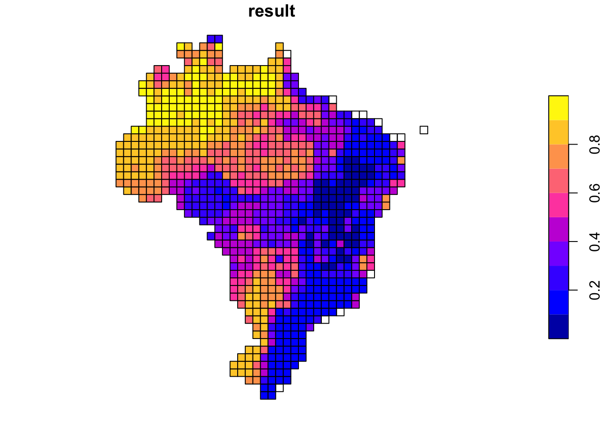

install.packages(setdiff("devtools", rownames(installed.packages())))
remotes::install_github('luizesser/caretSDM')
options(timeout = 600)caretSDM
caretSDM
caretSDM is a under development R package that uses the powerful caret package as the main engine to obtain Species Distribution Models. As caret is a packaged turned to build machine learning models, caretSDM has a strong focus on this approach.
Installing
First we will install the package from github. For that we will need to install the devtools package first and then install the caretSDM package.
library(caretSDM)Warning: replacing previous import 'caret::progress' by 'httr::progress' when
loading 'caretSDM'Warning: replacing previous import 'dplyr::union' by 'raster::union' when
loading 'caretSDM'Warning: replacing previous import 'dplyr::intersect' by 'raster::intersect'
when loading 'caretSDM'Warning: replacing previous import 'dplyr::select' by 'raster::select' when
loading 'caretSDM'Warning: replacing previous import 'raster::select' by 'dplyr::select' when
loading 'caretSDM'library(stars)Loading required package: abindLoading required package: sfLinking to GEOS 3.11.0, GDAL 3.5.3, PROJ 9.1.0; sf_use_s2() is TRUEPre-Processing
Obtaining example data
Now we will create some example data. Starting with occurrences and then predictors data. The first one is a function to obtain species data from GBIF, while the second is a function to obtain climatic variables from WorldClim 2.1. You can read more about them by running in the console ?GBIF_data and ?WorldClim_data.
#occ_data <- GBIF_data("Araucaria angustifolia")
occ_data <- read.csv('input_data/spp_data.csv')pred_data <- WorldClim_data(period = 'current', resolution=10)The input_sdm class
In this package we will use multiple classes to perform our analysis. Every time we use those objects to perform some kind of analysis, the object will keep the information of what we did. Ideally, the workflow will have only one object throughout it. The input_sdm class is the key class in the workflow, where every function will orbitate. That class puts occurrences, predictors, scenarios, models and predictions together to perform analysis that are only possible when two or more of these classes are available. First, we create the object by informing the occurrences, predictors and scenarios classes.
The first class we will use is the occurrences class (i.e. “response variable”, “target” or “label”). This class receives the occurrence data of the species. But, despite most species data available is presence-only, we consider here in this package that occurrence data is composed of two classes: presences and absences. If absences are not available in species data (which is expected), we will build multiple sets of pseudo-absences to be used in substitution. These datasets will be stored under occurrences in input_sdm.
Parallel to the occurrences class, we will have the predictors class to receive the environmental/climatic data (i.e. “predictor variables”, “covariates”, “explanatory variables”, “features” or “control variables”). With this class we will perform analysis using only the predictors (such as geoprocessing transformations; rescaling argument) and together with the occurrences class (such as variable selection routines). It is important to say that this package has a strong geoprocessing background. In this way, it is possible to declare your study area using a shapefile, but also create a new grid over the study area by applying a rescaling method. This can also provide new EPSG to the data to avoid latidudinal convergence.
input_sdm function also receives a scenarios object, where the researcher can provide new data to project the models. This data can be from future or past scenarios. One can also provide a new study_area if the aim of the modeling is to project a model in a new area (e.g. as in invasiveness assessments). Lately, when projecting the models, we can include the predictors data as new data to be projected on. This is useful for projecting models in the same region where the model was built.
It is possible to pass multiple classes to the occurrences, predictors and scenarios functions as rasterStacks (from raster package), SpatRaster (from terra package), stars (from stars package), data.frames, simple features (sf package) and others. In this way, if you want to import data to R in your own way and then work them with your favorite package your are able to pass it to caretSDM afterwards. We propose here the use of the directory to enter data into caretSDM. By passing the directory to the predictors and scenarios functions, they will recognize data in folder and import it as stars objects (all the processing with geographic data in caretSDM is done using stars and sf packages).
# folder containing the current data downloaded from WorldClim.
folder_current <- "~/Documents/GitHub/caretSDM/input_data/WorldClim_data_current"
# folder containing the future data downloaded from WorldClim.
folder_future <- "~/Documents/GitHub/caretSDM/input_data/WorldClim_data_future"
# importing the study area and informing the crs.
study_area <- st_read('input_data/Brasil/estadosl_2007.shp')Reading layer `estadosl_2007' from data source
`/Users/luizesser/Documents/GitHub/caretSDM/input_data/Brasil/estadosl_2007.shp'
using driver `ESRI Shapefile'
Simple feature collection with 27 features and 4 fields
Geometry type: MULTIPOLYGON
Dimension: XY
Bounding box: xmin: -73.99024 ymin: -33.75136 xmax: -32.39088 ymax: 5.270972
CRS: NAst_crs(study_area) <- st_crs(4326)
# create the input_sdm that we will work with during the workflow.
i <- input_sdm(occurrences(occ_data),
predictors(folder_current,
study_area = study_area,
rescaling=list(cellsize=100000, epsg=6933)),
scenarios(folder_future,
study_area = study_area,
rescaling=list(cellsize=100000, epsg=6933)))
i caretSDM
...........................
Class : input_sdm
Species Names : Colossoma.macropomum Mylossoma.aureum
Number of presences : 448 486
Number of Predictors : 19
Predictors Names : bio1, bio10, bio11, bio12, bio13, bio14, bio15, bio16, bio17, bio18, bio19, bio2, bio3, bio4, bio5, bio6, bio7, bio8, bio9
Extent : -7139043 -3039043 -4066640 733359.8 (xmin, xmax, ymin, ymax)
EPSG : EPSG:6933
Resolution : 1e+05 1e+05 (x, y)
Scenarios Names : mi_ssp126_10_2030.tif mi_ssp126_10_2090.tif mi_ssp585_10_2030.tif mi_ssp585_10_2090.tif
Number of Scenarios : 4 TIP: pay attention on the information printed above. As we follow this tutorial, information will get richer.
Data Cleaning
As the first step in our workflow, we will clean our occurrences data by applying a group of functions from the package CoordinateCleaner. In this function, we also provide a way to check for environmental duplicates, by including a predictors object. This function also checks for records in the sea if the species is terrestrial, but note that this can be switched off if the studied species is not terrestrial. The way caretSDM works, we can always overwrite the main input_sdm object to update it. The function will return a new object with all the previous information and the new information obtained from the data_clean function, note that at the end of the Data Cleaning information there is the Duplicated Cell method. This method is only possible when we have both the occurrence and predictors data.
i <- data_clean(i)Testing country capitalsRemoved 0 records.Testing country centroidsRemoved 1 records.Testing duplicatesRemoved 159 records.Testing equal lat/lonRemoved 0 records.Testing biodiversity institutionsRemoved 0 records.Testing coordinate validityRemoved 0 records.Testing sea coordinatesRemoved 0 records.[1] "Predictors identified, procceding with grid filter (removing NA and duplicated data)."i caretSDM
...........................
Class : input_sdm
Species Names : Colossoma.macropomum Mylossoma.aureum
Number of presences : 61 59
Data Cleaning : NAs, Capitals, Centroids, Geographically Duplicated, Identical Lat/Long, Institutions, Invalid, Non-terrestrial, Duplicated Cell
Number of Predictors : 19
Predictors Names : bio1, bio10, bio11, bio12, bio13, bio14, bio15, bio16, bio17, bio18, bio19, bio2, bio3, bio4, bio5, bio6, bio7, bio8, bio9
Extent : -7139043 -3039043 -4066640 733359.8 (xmin, xmax, ymin, ymax)
EPSG : EPSG:6933
Resolution : 1e+05 1e+05 (x, y)
Scenarios Names : mi_ssp126_10_2030.tif mi_ssp126_10_2090.tif mi_ssp585_10_2030.tif mi_ssp585_10_2090.tif
Number of Scenarios : 4 TIP: Note that the information regarding the i object changed. Now it includes the information that we performed a Data Cleaning routine and explicitly informs what methods were used.
Variable Selection
In vif_predictors, we are able to perform two methods to select variables: selecting all area or using the presence records (which is debatable, but implemented).
i <- vif_predictors(i, area='all')Using all variables available: bio1, bio10, bio11, bio12, bio13, bio14, bio15, bio16, bio17, bio18, bio19, bio2, bio3, bio4, bio5, bio6, bio7, bio8, bio9NULLi caretSDM
...........................
Class : input_sdm
Species Names : Colossoma.macropomum Mylossoma.aureum
Number of presences : 61 59
Data Cleaning : NAs, Capitals, Centroids, Geographically Duplicated, Identical Lat/Long, Institutions, Invalid, Non-terrestrial, Duplicated Cell
Number of Predictors : 19
Predictors Names : bio1, bio10, bio11, bio12, bio13, bio14, bio15, bio16, bio17, bio18, bio19, bio2, bio3, bio4, bio5, bio6, bio7, bio8, bio9
Extent : -7139043 -3039043 -4066640 733359.8 (xmin, xmax, ymin, ymax)
EPSG : EPSG:6933
Resolution : 1e+05 1e+05 (x, y)
Area (VIF) : all
Selected Variables (VIF) : bio14, bio18, bio19, bio5
Scenarios Names : mi_ssp126_10_2030.tif mi_ssp126_10_2090.tif mi_ssp585_10_2030.tif mi_ssp585_10_2090.tif
Number of Scenarios : 4 Generate Pseudoabsences
As we mentioned before, pseudoabsence data will be stored in the occurrences object (inside the input_sdm). To generate them, you can inform some parameters. The argument variables_selected will inform which variables you want to use to build your pseudoabsences/models. This can either be a vector of variables names or a previously performed selection method.
i <- pseudoabsences(i, method='bioclim', variables_selected='vif')Using variables selected by vif : bio14 bio18 bio19 bio5NULLi caretSDM
...........................
Class : input_sdm
Species Names : Colossoma.macropomum Mylossoma.aureum
Number of presences : 61 59
Pseudoabsence methods :
Method to obtain PAs : bioclim
Number of PA sets : 10
Number of PAs in each set : 61 59
Data Cleaning : NAs, Capitals, Centroids, Geographically Duplicated, Identical Lat/Long, Institutions, Invalid, Non-terrestrial, Duplicated Cell
Number of Predictors : 19
Predictors Names : bio1, bio10, bio11, bio12, bio13, bio14, bio15, bio16, bio17, bio18, bio19, bio2, bio3, bio4, bio5, bio6, bio7, bio8, bio9
Extent : -7139043 -3039043 -4066640 733359.8 (xmin, xmax, ymin, ymax)
EPSG : EPSG:6933
Resolution : 1e+05 1e+05 (x, y)
Area (VIF) : all
Selected Variables (VIF) : bio14, bio18, bio19, bio5
Scenarios Names : mi_ssp126_10_2030.tif mi_ssp126_10_2090.tif mi_ssp585_10_2030.tif mi_ssp585_10_2090.tif
Number of Scenarios : 4 TIP: Note, again, that the information regarding the i object has increased. Now it includes the information that we performed a Data Cleaning routine, explicitly informing what methods were used, the information regarding VIF routine and the pseudoabsences.
We can test if our pseudoabsences are significantly different from the presences by ploting the t-SNE:
tsne_sdm(i, variables_selected='vif')$Colossoma.macropomum
$Colossoma.macropomum[[1]]
$Colossoma.macropomum[[2]]
$Colossoma.macropomum[[3]]
$Colossoma.macropomum[[4]]
$Colossoma.macropomum[[5]]
$Colossoma.macropomum[[6]]
$Colossoma.macropomum[[7]]
$Colossoma.macropomum[[8]]
$Colossoma.macropomum[[9]]
$Colossoma.macropomum[[10]]
$Mylossoma.aureum
$Mylossoma.aureum[[1]]
$Mylossoma.aureum[[2]]
$Mylossoma.aureum[[3]]
$Mylossoma.aureum[[4]]
$Mylossoma.aureum[[5]]
$Mylossoma.aureum[[6]]
$Mylossoma.aureum[[7]]
$Mylossoma.aureum[[8]]
$Mylossoma.aureum[[9]]
$Mylossoma.aureum[[10]]
Processing
With the occurrences and predictors data put together, we can pass to the modeling. As the name suggests, this package uses the caret package underlying its modeling procedure. For those who are not familiar, caret is the easiest way to perform Machine Learning analysis in R. It works by setting a modeling wrapper to pass multiple packages and can provide a lot of automation regarding algorithms fine-tuning, data spliting, pre-processing methods and predictions. These automated functions from caret can be altered using the ctrl argument in train_sdm function. See ?caret::trainControl for all options available.
Note that, when you are using an algorithm for the first time, caret will ask you to install the relevant packages to properly run the algorithm.
suppressMessages(i <- train_sdm(i, algo=c('svmLinear2','mda','nnet','nb', 'kknn'), variables_selected='vif'))Using variables selected by vif : bio14 bio18 bio19 bio5NULL
# weights: 7
initial value 63.837635
iter 10 value 55.741244
iter 20 value 49.973155
iter 30 value 49.161608
iter 40 value 49.158880
iter 50 value 49.158506
iter 60 value 49.155815
final value 49.155760
converged
# weights: 19
initial value 72.972967
final value 63.070899
converged
# weights: 31
initial value 66.535967
final value 61.987014
converged
# weights: 7
initial value 59.073202
iter 10 value 56.487145
final value 56.475125
converged
# weights: 19
initial value 64.943155
iter 10 value 57.028696
iter 20 value 50.940226
iter 30 value 49.749217
iter 40 value 49.121682
iter 50 value 49.085688
final value 49.085568
converged
# weights: 31
initial value 62.167045
iter 10 value 57.815563
iter 20 value 55.612691
iter 30 value 48.860290
iter 40 value 46.879013
iter 50 value 45.057892
iter 60 value 41.523551
iter 70 value 38.992139
iter 80 value 36.504057
iter 90 value 31.620449
iter 100 value 31.506647
final value 31.506647
stopped after 100 iterations
# weights: 7
initial value 61.945825
iter 10 value 56.132661
iter 20 value 56.129921
final value 56.129919
converged
# weights: 19
initial value 58.509949
iter 10 value 47.055409
iter 20 value 43.431399
iter 30 value 43.150258
iter 40 value 41.516984
iter 50 value 41.097311
iter 60 value 40.837988
iter 70 value 38.706208
iter 80 value 38.164998
iter 90 value 38.159454
iter 100 value 38.157517
final value 38.157517
stopped after 100 iterations
# weights: 31
initial value 63.379573
iter 10 value 60.732827
iter 20 value 56.173643
iter 30 value 56.154776
iter 40 value 54.912190
iter 50 value 52.545033
iter 60 value 50.737337
iter 70 value 50.724843
iter 80 value 49.690236
iter 90 value 47.502231
iter 100 value 46.133209
final value 46.133209
stopped after 100 iterations
# weights: 7
initial value 60.716371
iter 10 value 52.566517
final value 52.566513
converged
# weights: 19
initial value 82.530530
iter 10 value 52.757012
final value 52.566512
converged
# weights: 31
initial value 68.305602
iter 10 value 43.643809
iter 20 value 43.264951
iter 30 value 43.238575
final value 43.238496
converged
# weights: 7
initial value 74.593150
iter 10 value 63.762005
iter 20 value 53.952357
iter 30 value 48.294046
iter 40 value 47.467298
final value 47.467291
converged
# weights: 19
initial value 60.396512
iter 10 value 53.070055
iter 20 value 52.570076
iter 30 value 47.461884
iter 40 value 45.960289
iter 50 value 45.926174
iter 60 value 45.601982
iter 70 value 43.085512
iter 80 value 39.229315
iter 90 value 38.955296
iter 100 value 36.600531
final value 36.600531
stopped after 100 iterations
# weights: 31
initial value 66.455320
iter 10 value 54.422668
iter 20 value 52.596558
iter 30 value 45.867470
iter 40 value 42.814246
iter 50 value 41.882364
iter 60 value 40.119724
iter 70 value 38.859080
iter 80 value 36.384133
iter 90 value 36.334915
final value 36.331528
converged
# weights: 7
initial value 64.381479
final value 63.769599
converged
# weights: 19
initial value 61.634488
iter 10 value 50.079818
iter 20 value 47.289220
iter 30 value 46.849212
iter 40 value 45.159300
iter 50 value 44.789565
iter 60 value 44.787792
iter 70 value 44.787705
iter 80 value 44.787341
final value 44.787318
converged
# weights: 31
initial value 70.813722
iter 10 value 50.376276
iter 20 value 46.218940
iter 30 value 46.180232
iter 40 value 46.178833
iter 50 value 46.178677
iter 60 value 46.178373
iter 70 value 46.178108
iter 80 value 46.177715
iter 90 value 46.177498
iter 100 value 46.176733
final value 46.176733
stopped after 100 iterations
# weights: 7
initial value 63.423959
final value 63.070899
converged
# weights: 19
initial value 66.371738
final value 63.070899
converged
# weights: 31
initial value 67.514340
final value 63.070899
converged
# weights: 7
initial value 63.160355
iter 10 value 58.797644
iter 20 value 58.458362
iter 30 value 53.844318
iter 40 value 51.032320
iter 50 value 50.746873
final value 50.746827
converged
# weights: 19
initial value 71.651531
iter 10 value 58.879098
iter 20 value 57.163704
iter 30 value 52.512733
iter 40 value 50.344299
iter 50 value 49.164787
iter 60 value 46.297397
iter 70 value 42.465594
iter 80 value 41.964363
iter 90 value 41.325091
iter 100 value 39.927464
final value 39.927464
stopped after 100 iterations
# weights: 31
initial value 63.849656
iter 10 value 56.428153
iter 20 value 51.025826
iter 30 value 49.642643
iter 40 value 49.379473
iter 50 value 49.179596
iter 60 value 41.769385
iter 70 value 41.120106
iter 80 value 39.484767
iter 90 value 37.099273
iter 100 value 36.644851
final value 36.644851
stopped after 100 iterations
# weights: 7
initial value 60.231583
iter 10 value 59.398922
final value 59.398915
converged
# weights: 19
initial value 75.312581
iter 10 value 58.375687
iter 20 value 58.263926
iter 30 value 58.263181
final value 58.263110
converged
# weights: 31
initial value 93.757796
iter 10 value 58.548344
iter 20 value 57.418386
iter 30 value 54.896355
iter 40 value 54.894149
iter 50 value 54.893694
iter 60 value 50.685197
iter 70 value 47.137987
iter 80 value 46.799278
iter 90 value 43.227031
iter 100 value 42.365968
final value 42.365968
stopped after 100 iterations
# weights: 7
initial value 63.791313
final value 63.769541
converged
# weights: 19
initial value 77.774079
iter 10 value 56.470824
iter 10 value 56.470824
final value 56.470807
converged
# weights: 31
initial value 67.901657
iter 10 value 52.913708
iter 20 value 42.342977
iter 30 value 31.551025
iter 40 value 28.124859
iter 50 value 27.930302
iter 60 value 27.424447
iter 70 value 27.423158
final value 27.423140
converged
# weights: 7
initial value 65.602822
iter 10 value 56.094070
iter 20 value 56.047315
iter 30 value 54.943719
iter 40 value 52.324774
iter 50 value 51.841591
iter 50 value 51.841590
final value 51.841590
converged
# weights: 19
initial value 81.061376
iter 10 value 58.099176
iter 20 value 56.413500
iter 30 value 53.767870
iter 40 value 52.838281
iter 50 value 52.799368
iter 60 value 51.794097
iter 70 value 47.944149
iter 80 value 45.864383
iter 90 value 43.089126
iter 100 value 38.285974
final value 38.285974
stopped after 100 iterations
# weights: 31
initial value 70.374951
iter 10 value 53.369376
iter 20 value 52.065802
iter 30 value 49.965077
iter 40 value 42.336258
iter 50 value 37.298646
iter 60 value 36.146016
iter 70 value 35.998993
iter 80 value 35.901057
iter 90 value 35.808379
final value 35.807024
converged
# weights: 7
initial value 66.613823
final value 63.774529
converged
# weights: 19
initial value 64.593248
iter 10 value 56.042755
iter 20 value 49.394014
iter 30 value 45.711796
iter 40 value 43.934677
iter 50 value 43.686483
iter 60 value 43.686274
final value 43.686241
converged
# weights: 31
initial value 65.737593
iter 10 value 51.006663
iter 20 value 49.874348
iter 30 value 49.870626
iter 40 value 49.868913
iter 50 value 49.752308
iter 60 value 48.574522
iter 70 value 48.569872
iter 80 value 48.569018
iter 90 value 48.567753
iter 100 value 48.567441
final value 48.567441
stopped after 100 iterations
# weights: 31
initial value 85.158328
iter 10 value 65.014919
iter 20 value 63.685676
iter 30 value 61.314995
iter 40 value 61.098551
final value 61.098547
converged
# weights: 7
initial value 65.287154
iter 10 value 51.460549
iter 20 value 50.611506
iter 30 value 50.610384
final value 50.610257
converged
# weights: 19
initial value 65.323291
iter 10 value 58.173564
iter 20 value 57.614858
iter 30 value 57.614154
final value 57.614153
converged
# weights: 31
initial value 80.271184
iter 10 value 57.410002
iter 20 value 49.187400
iter 30 value 49.182702
iter 40 value 49.170754
iter 50 value 49.062818
iter 60 value 48.661469
iter 70 value 48.462723
final value 48.462181
converged
# weights: 7
initial value 66.418696
iter 10 value 62.452983
iter 20 value 60.064760
final value 60.040735
converged
# weights: 19
initial value 64.759466
iter 10 value 56.872398
iter 20 value 51.513603
iter 30 value 48.827728
iter 40 value 43.505115
iter 50 value 40.423000
iter 60 value 37.750943
iter 70 value 37.600321
final value 37.600302
converged
# weights: 31
initial value 64.890212
iter 10 value 53.143967
iter 20 value 47.913682
iter 30 value 46.929754
iter 40 value 46.927513
final value 46.927506
converged
# weights: 7
initial value 65.535768
iter 10 value 50.695060
iter 20 value 49.787111
iter 30 value 46.747697
iter 40 value 44.408738
iter 50 value 43.190163
iter 60 value 42.874086
final value 42.872487
converged
# weights: 19
initial value 62.185463
iter 10 value 53.803028
iter 20 value 49.035083
iter 30 value 48.212795
iter 40 value 47.343556
iter 50 value 47.165988
iter 60 value 47.145772
iter 70 value 47.145089
final value 47.145079
converged
# weights: 31
initial value 65.238128
iter 10 value 63.073938
iter 20 value 62.872422
iter 30 value 58.597391
iter 40 value 58.366330
iter 50 value 58.365550
iter 60 value 57.546961
iter 70 value 41.881064
iter 80 value 40.264778
iter 90 value 40.256717
iter 100 value 39.929565
final value 39.929565
stopped after 100 iterations
# weights: 7
initial value 66.521511
final value 63.769541
converged
# weights: 19
initial value 67.805026
iter 10 value 55.816109
iter 20 value 48.641254
iter 30 value 47.123786
iter 40 value 46.861351
iter 50 value 46.861049
iter 50 value 46.861049
iter 50 value 46.861049
final value 46.861049
converged
# weights: 31
initial value 63.922146
iter 10 value 62.109295
final value 62.109294
converged
# weights: 7
initial value 63.901994
iter 10 value 54.686458
iter 20 value 49.934219
iter 30 value 49.737519
final value 49.734702
converged
# weights: 19
initial value 68.064548
iter 10 value 61.506467
iter 20 value 60.654066
iter 30 value 55.940273
iter 40 value 54.966944
iter 50 value 49.152237
iter 60 value 46.698475
iter 70 value 45.776450
iter 80 value 43.055578
iter 90 value 42.818953
final value 42.818926
converged
# weights: 31
initial value 70.009734
iter 10 value 54.594325
iter 20 value 48.938293
iter 30 value 48.159702
iter 40 value 47.253500
iter 50 value 45.648893
iter 60 value 40.827960
iter 70 value 40.471870
iter 80 value 40.463745
final value 40.463737
converged
# weights: 7
initial value 63.858230
final value 63.769633
converged
# weights: 19
initial value 62.760622
iter 10 value 59.120044
iter 20 value 53.096014
iter 30 value 53.072404
iter 40 value 52.885518
iter 50 value 52.336610
iter 60 value 52.335999
iter 70 value 52.335059
iter 80 value 51.587413
iter 90 value 50.300512
iter 100 value 45.915391
final value 45.915391
stopped after 100 iterations
# weights: 31
initial value 65.729801
iter 10 value 50.024047
iter 20 value 49.684957
iter 30 value 47.163434
iter 40 value 47.107893
iter 50 value 47.107216
iter 60 value 44.566546
iter 70 value 41.598667
iter 80 value 41.567711
iter 90 value 41.567416
iter 100 value 41.567340
final value 41.567340
stopped after 100 iterations
# weights: 7
initial value 63.974430
final value 63.070899
converged
# weights: 19
initial value 59.914873
iter 10 value 50.463588
iter 20 value 49.622645
iter 30 value 49.501756
iter 40 value 49.485733
iter 50 value 49.484339
iter 50 value 49.484339
final value 49.484338
converged
# weights: 31
initial value 66.163235
iter 10 value 52.030972
iter 20 value 51.484221
iter 30 value 51.482651
iter 30 value 51.482651
iter 30 value 51.482651
final value 51.482651
converged
# weights: 7
initial value 64.084056
iter 10 value 62.882118
iter 20 value 59.163957
final value 59.162837
converged
# weights: 19
initial value 61.555105
iter 10 value 59.183596
iter 20 value 55.685970
iter 30 value 51.163473
iter 40 value 42.177065
iter 50 value 40.741304
iter 60 value 39.847167
final value 39.820323
converged
# weights: 31
initial value 66.488792
iter 10 value 53.513222
iter 20 value 45.165407
iter 30 value 42.230937
iter 40 value 42.111677
iter 50 value 41.822127
iter 60 value 36.267855
iter 70 value 34.899555
iter 80 value 34.804788
iter 90 value 34.722722
iter 100 value 34.627537
final value 34.627537
stopped after 100 iterations
# weights: 7
initial value 66.373919
iter 10 value 59.096505
iter 20 value 56.169240
iter 30 value 56.165454
iter 40 value 56.164924
final value 56.164815
converged
# weights: 19
initial value 66.342043
final value 63.073174
converged
# weights: 31
initial value 62.433427
iter 10 value 48.227995
iter 20 value 46.656188
final value 46.652699
converged
# weights: 7
initial value 65.976601
final value 63.769541
converged
# weights: 19
initial value 70.664500
iter 10 value 60.062051
iter 20 value 60.028133
final value 60.028032
converged
# weights: 31
initial value 64.818765
iter 10 value 51.111147
iter 20 value 51.075156
final value 51.075087
converged
# weights: 7
initial value 66.461384
iter 10 value 55.152791
iter 20 value 53.163362
iter 30 value 50.875652
iter 40 value 49.488394
final value 49.488227
converged
# weights: 19
initial value 73.359533
iter 10 value 63.959737
iter 20 value 61.843644
iter 30 value 60.503255
iter 40 value 53.512805
iter 50 value 49.576503
iter 60 value 43.677300
iter 70 value 40.191856
iter 80 value 37.451305
iter 90 value 37.092505
iter 100 value 37.089003
final value 37.089003
stopped after 100 iterations
# weights: 31
initial value 88.907661
iter 10 value 60.862233
iter 20 value 53.248296
iter 30 value 48.680836
iter 40 value 46.401168
iter 50 value 44.261011
iter 60 value 39.694848
iter 70 value 39.580282
iter 80 value 39.548053
iter 90 value 39.481059
iter 100 value 38.863795
final value 38.863795
stopped after 100 iterations
# weights: 7
initial value 78.162795
final value 63.769594
converged
# weights: 19
initial value 64.571933
final value 63.769847
converged
# weights: 31
initial value 71.007083
iter 10 value 61.267125
iter 20 value 58.847176
iter 30 value 55.054626
iter 40 value 55.051946
iter 50 value 53.615697
iter 60 value 52.718077
iter 70 value 52.046695
iter 80 value 50.582664
iter 90 value 50.533310
iter 100 value 50.091112
final value 50.091112
stopped after 100 iterations
# weights: 31
initial value 104.990553
iter 10 value 74.514093
iter 20 value 71.208660
iter 30 value 61.360744
iter 40 value 59.241769
iter 50 value 57.121844
iter 60 value 56.697524
iter 70 value 55.315420
iter 80 value 52.791336
iter 90 value 51.175617
iter 100 value 50.843079
final value 50.843079
stopped after 100 iterations
# weights: 7
initial value 64.061794
final value 63.769541
converged
# weights: 19
initial value 68.334304
final value 63.769541
converged
# weights: 31
initial value 70.953908
iter 10 value 52.828701
iter 20 value 50.126286
iter 30 value 48.057627
iter 40 value 47.062636
iter 50 value 44.975182
iter 60 value 42.908858
iter 70 value 41.696029
iter 80 value 41.510733
iter 90 value 41.497656
iter 100 value 41.490185
final value 41.490185
stopped after 100 iterations
# weights: 7
initial value 65.601626
iter 10 value 54.969040
iter 20 value 52.718551
iter 30 value 52.711076
final value 52.711073
converged
# weights: 19
initial value 66.993629
iter 10 value 56.211848
iter 20 value 54.048732
iter 30 value 52.277648
iter 40 value 51.617121
iter 50 value 51.536192
iter 60 value 51.534633
final value 51.534589
converged
# weights: 31
initial value 67.019505
iter 10 value 56.419749
iter 20 value 53.129024
iter 30 value 51.177418
iter 40 value 50.616206
iter 50 value 49.621193
iter 60 value 49.545930
iter 70 value 49.544234
final value 49.544231
converged
# weights: 7
initial value 64.515646
final value 63.769669
converged
# weights: 19
initial value 65.785725
iter 10 value 61.575014
final value 61.575004
converged
# weights: 31
initial value 67.368314
iter 10 value 61.205868
final value 61.205618
converged
# weights: 7
initial value 66.456893
final value 63.070899
converged
# weights: 19
initial value 62.810918
iter 10 value 56.142692
final value 56.129469
converged
# weights: 31
initial value 75.766250
iter 10 value 57.659552
final value 57.659540
converged
# weights: 7
initial value 63.271532
iter 10 value 62.615376
iter 20 value 55.265828
iter 30 value 51.406488
final value 51.390783
converged
# weights: 19
initial value 64.452811
iter 10 value 59.770347
iter 20 value 55.248399
iter 30 value 51.599763
iter 40 value 48.486581
iter 50 value 48.361863
iter 60 value 44.543501
iter 70 value 44.327184
iter 80 value 43.871682
iter 90 value 38.450060
iter 100 value 36.732747
final value 36.732747
stopped after 100 iterations
# weights: 31
initial value 63.026941
iter 10 value 56.774976
iter 20 value 52.863028
iter 30 value 51.899039
iter 40 value 47.792662
iter 50 value 44.553464
iter 60 value 36.791918
iter 70 value 32.945884
iter 80 value 32.269519
iter 90 value 32.021673
iter 100 value 31.796701
final value 31.796701
stopped after 100 iterations
# weights: 7
initial value 68.030867
iter 10 value 61.154359
iter 20 value 56.502289
iter 30 value 54.573885
iter 40 value 54.569996
iter 50 value 54.567560
iter 60 value 54.566198
iter 70 value 54.564746
iter 80 value 54.564688
iter 90 value 54.564423
iter 100 value 54.564359
final value 54.564359
stopped after 100 iterations
# weights: 19
initial value 66.123209
iter 10 value 63.073457
iter 20 value 63.070925
iter 30 value 50.094838
iter 40 value 49.621326
iter 50 value 48.526240
iter 60 value 48.346841
iter 70 value 48.346181
iter 80 value 46.699089
iter 90 value 46.444359
iter 100 value 46.444196
final value 46.444196
stopped after 100 iterations
# weights: 31
initial value 63.970158
iter 10 value 56.145318
iter 20 value 56.139930
final value 56.139913
converged
# weights: 7
initial value 63.453283
final value 63.070899
converged
# weights: 19
initial value 91.162892
final value 63.070899
converged
# weights: 31
initial value 70.410962
iter 10 value 59.655939
iter 20 value 59.597622
final value 59.597592
converged
# weights: 7
initial value 65.226549
iter 10 value 61.638398
iter 20 value 61.054282
iter 30 value 56.783511
iter 40 value 52.195400
final value 52.188297
converged
# weights: 19
initial value 60.977581
iter 10 value 54.950522
iter 20 value 54.011024
iter 30 value 52.734809
iter 40 value 50.507943
iter 50 value 50.478116
iter 60 value 49.795729
iter 70 value 49.738155
final value 49.737177
converged
# weights: 31
initial value 63.570317
iter 10 value 60.732203
iter 20 value 59.741221
iter 30 value 58.887375
iter 40 value 56.484557
iter 50 value 54.849032
iter 60 value 54.583629
iter 70 value 53.453776
iter 80 value 50.654390
iter 90 value 48.668868
iter 100 value 48.205419
final value 48.205419
stopped after 100 iterations
# weights: 7
initial value 63.330903
final value 63.070944
converged
# weights: 19
initial value 65.938567
final value 63.074422
converged
# weights: 31
initial value 65.369840
iter 10 value 61.257970
iter 20 value 59.430848
iter 30 value 55.470458
iter 40 value 55.469925
iter 50 value 55.469868
iter 60 value 55.469520
iter 70 value 55.469431
iter 80 value 54.909798
iter 90 value 54.190285
iter 100 value 54.189132
final value 54.189132
stopped after 100 iterations
# weights: 7
initial value 77.356809
final value 63.769541
converged
# weights: 19
initial value 68.443160
final value 63.769541
converged
# weights: 31
initial value 63.776472
iter 10 value 61.690994
iter 20 value 61.639576
final value 61.639528
converged
# weights: 7
initial value 64.121762
iter 10 value 61.646409
iter 20 value 55.386015
iter 30 value 54.358726
final value 54.358579
converged
# weights: 19
initial value 80.023534
iter 10 value 55.650457
iter 20 value 55.549946
iter 30 value 54.823152
iter 40 value 50.054592
iter 50 value 46.302166
final value 46.297429
converged
# weights: 31
initial value 69.693613
iter 10 value 58.512781
iter 20 value 57.334131
iter 30 value 54.371238
iter 40 value 51.060672
iter 50 value 49.615980
iter 60 value 49.502792
iter 70 value 49.443802
iter 80 value 46.886371
iter 90 value 43.818990
iter 100 value 43.495027
final value 43.495027
stopped after 100 iterations
# weights: 7
initial value 66.208059
final value 62.210476
converged
# weights: 19
initial value 70.156378
iter 10 value 57.093767
iter 20 value 54.652859
iter 30 value 54.646187
iter 40 value 54.632766
iter 50 value 54.591176
iter 60 value 53.769803
iter 70 value 53.759992
iter 80 value 53.756054
iter 90 value 53.752793
iter 100 value 53.751653
final value 53.751653
stopped after 100 iterations
# weights: 31
initial value 68.836455
iter 10 value 63.770572
iter 20 value 62.531786
iter 30 value 59.470268
iter 40 value 58.639761
iter 50 value 55.948541
iter 60 value 55.946186
iter 70 value 53.414387
iter 80 value 53.414280
iter 90 value 53.413741
iter 100 value 53.413524
final value 53.413524
stopped after 100 iterations
# weights: 31
initial value 89.630245
iter 10 value 84.038658
iter 20 value 80.581272
iter 30 value 74.688420
iter 40 value 72.466255
iter 50 value 70.405242
iter 60 value 68.574243
iter 70 value 65.713512
iter 80 value 62.526491
iter 90 value 62.009376
iter 100 value 61.107190
final value 61.107190
stopped after 100 iterations
# weights: 7
initial value 67.211245
iter 10 value 62.433003
iter 20 value 61.644024
iter 30 value 60.894398
iter 40 value 60.160241
final value 60.160237
converged
# weights: 19
initial value 73.754802
iter 10 value 56.319256
iter 20 value 54.828305
iter 30 value 54.697679
final value 54.697444
converged
# weights: 31
initial value 66.535476
final value 55.677310
converged
# weights: 7
initial value 66.165570
iter 10 value 63.828690
iter 20 value 56.445775
iter 30 value 49.261589
iter 40 value 47.247635
final value 47.207031
converged
# weights: 19
initial value 57.038195
iter 10 value 48.370838
iter 20 value 46.613811
iter 30 value 43.959340
iter 40 value 41.650887
iter 50 value 41.067290
iter 60 value 39.806539
iter 70 value 38.639195
iter 80 value 36.828522
iter 90 value 36.524074
final value 36.522243
converged
# weights: 31
initial value 81.320652
iter 10 value 58.487160
iter 20 value 54.685836
iter 30 value 50.721672
iter 40 value 50.140658
iter 50 value 47.962380
iter 60 value 43.341224
iter 70 value 37.648582
iter 80 value 35.544550
iter 90 value 34.366312
iter 100 value 33.964713
final value 33.964713
stopped after 100 iterations
# weights: 7
initial value 68.705928
final value 63.769874
converged
# weights: 19
initial value 72.736277
iter 10 value 48.116696
iter 20 value 47.372445
iter 30 value 44.774268
iter 40 value 43.235628
iter 50 value 43.230983
iter 60 value 43.230755
final value 43.230712
converged
# weights: 31
initial value 64.653789
iter 10 value 60.952916
iter 20 value 60.169640
iter 30 value 60.169379
iter 30 value 60.169379
final value 60.169377
converged
# weights: 7
initial value 71.315928
iter 10 value 47.953377
iter 20 value 42.242240
iter 30 value 41.905266
iter 40 value 41.904491
iter 50 value 41.903741
iter 60 value 41.903302
iter 70 value 41.903043
final value 41.903028
converged
# weights: 19
initial value 63.663022
iter 10 value 57.425450
iter 20 value 57.424213
final value 57.424191
converged
# weights: 31
initial value 69.734375
iter 10 value 57.548162
iter 20 value 53.971442
iter 30 value 46.630137
iter 40 value 43.374660
iter 50 value 41.994354
iter 60 value 40.527622
iter 70 value 39.034557
iter 80 value 38.876501
iter 90 value 38.869572
iter 100 value 38.869405
final value 38.869405
stopped after 100 iterations
# weights: 7
initial value 58.178164
iter 10 value 50.079663
final value 50.075121
converged
# weights: 19
initial value 75.434718
iter 10 value 59.950134
iter 20 value 58.968831
iter 30 value 58.944293
iter 40 value 58.943577
iter 40 value 58.943577
final value 58.943577
converged
# weights: 31
initial value 75.085398
iter 10 value 53.517780
iter 20 value 49.234038
iter 30 value 43.640197
iter 40 value 39.288100
iter 50 value 38.922444
final value 38.918182
converged
# weights: 7
initial value 65.343761
final value 63.769609
converged
# weights: 19
initial value 64.224210
iter 10 value 52.276219
iter 20 value 46.469267
iter 30 value 46.043630
iter 40 value 45.747523
iter 50 value 45.747143
iter 60 value 45.746999
iter 70 value 45.746658
iter 80 value 45.746620
final value 45.746596
converged
# weights: 31
initial value 74.225131
iter 10 value 54.841606
iter 20 value 54.758159
iter 30 value 54.757824
iter 40 value 49.181370
iter 50 value 49.088764
iter 60 value 49.046738
iter 70 value 45.400320
iter 80 value 44.319131
iter 90 value 44.307983
iter 100 value 44.307200
final value 44.307200
stopped after 100 iterations
# weights: 7
initial value 63.083477
final value 63.070899
converged
# weights: 19
initial value 66.632737
iter 10 value 59.653683
iter 20 value 59.401408
final value 59.401186
converged
# weights: 31
initial value 67.683058
iter 10 value 49.973051
iter 20 value 49.920437
final value 49.920404
converged
# weights: 7
initial value 63.138344
iter 10 value 54.937917
iter 20 value 43.006066
iter 30 value 38.336250
final value 38.326887
converged
# weights: 19
initial value 76.728714
iter 10 value 53.883231
iter 20 value 47.995563
iter 30 value 43.083459
iter 40 value 40.520402
iter 50 value 40.238855
iter 60 value 39.595693
final value 39.581026
converged
# weights: 31
initial value 73.548558
iter 10 value 60.911252
iter 20 value 59.353650
iter 30 value 48.915196
iter 40 value 48.029520
iter 50 value 47.155130
iter 60 value 41.859322
iter 70 value 38.527521
iter 80 value 38.465049
iter 90 value 38.464113
final value 38.464110
converged
# weights: 7
initial value 63.980697
final value 63.071075
converged
# weights: 19
initial value 72.124770
iter 10 value 51.719787
iter 20 value 46.573549
iter 30 value 45.484944
iter 40 value 45.484268
final value 45.484223
converged
# weights: 31
initial value 69.312040
iter 10 value 48.106720
iter 20 value 45.546191
iter 30 value 44.568445
iter 40 value 38.157003
iter 50 value 34.638632
iter 60 value 34.063113
iter 70 value 34.054726
iter 80 value 34.054365
iter 90 value 34.054060
iter 100 value 34.053804
final value 34.053804
stopped after 100 iterations
# weights: 7
initial value 69.316658
iter 10 value 61.310787
final value 61.310688
converged
# weights: 19
initial value 61.987817
iter 10 value 52.874390
iter 20 value 51.213134
iter 30 value 50.964390
iter 40 value 50.963336
iter 50 value 50.963153
iter 50 value 50.963152
iter 50 value 50.963152
final value 50.963152
converged
# weights: 31
initial value 69.022723
iter 10 value 52.494377
iter 20 value 51.087758
iter 30 value 50.974804
iter 40 value 50.045466
iter 50 value 49.538424
iter 60 value 49.537849
final value 49.537808
converged
# weights: 7
initial value 67.675249
iter 10 value 62.994896
iter 20 value 59.471143
iter 30 value 51.630324
final value 51.626058
converged
# weights: 19
initial value 62.661006
iter 10 value 52.716759
iter 20 value 50.984013
iter 30 value 46.787919
iter 40 value 45.708936
iter 50 value 45.681834
iter 60 value 44.033840
iter 70 value 41.948083
iter 80 value 41.871281
iter 90 value 41.790570
iter 100 value 41.685600
final value 41.685600
stopped after 100 iterations
# weights: 31
initial value 66.777553
iter 10 value 60.211370
iter 20 value 49.010992
iter 30 value 46.216659
iter 40 value 44.030570
iter 50 value 42.375211
iter 60 value 39.233275
iter 70 value 38.767737
iter 80 value 38.639992
iter 90 value 38.597518
iter 100 value 38.575151
final value 38.575151
stopped after 100 iterations
# weights: 7
initial value 67.377245
final value 62.669228
converged
# weights: 19
initial value 63.341214
iter 10 value 51.397621
iter 20 value 51.131378
iter 30 value 51.131118
iter 40 value 50.863152
iter 50 value 50.205349
iter 60 value 50.203213
iter 70 value 50.203007
final value 50.202983
converged
# weights: 31
initial value 65.848896
iter 10 value 59.553847
iter 20 value 58.912607
iter 30 value 53.091935
iter 40 value 52.415685
iter 50 value 51.451630
iter 60 value 47.195376
iter 70 value 46.008018
iter 80 value 45.485657
iter 90 value 45.174663
iter 100 value 45.173796
final value 45.173796
stopped after 100 iterations
# weights: 31
initial value 82.679630
iter 10 value 73.687511
iter 20 value 67.904142
iter 30 value 62.267273
iter 40 value 58.659218
iter 50 value 58.556002
iter 60 value 58.551686
iter 70 value 58.550904
iter 80 value 58.549200
final value 58.548847
converged
# weights: 7
initial value 66.493287
iter 10 value 57.250815
iter 20 value 57.248457
iter 30 value 57.248220
iter 30 value 57.248219
iter 30 value 57.248219
final value 57.248219
converged
# weights: 19
initial value 72.510767
iter 10 value 49.868990
iter 20 value 47.698503
iter 30 value 47.667353
final value 47.667271
converged
# weights: 31
initial value 64.939137
iter 10 value 57.445978
iter 20 value 57.424229
iter 30 value 56.534345
final value 56.534298
converged
# weights: 7
initial value 64.085744
iter 10 value 61.342021
iter 20 value 51.073295
iter 30 value 49.618198
final value 49.617492
converged
# weights: 19
initial value 62.461715
iter 10 value 55.773918
iter 20 value 50.301505
iter 30 value 48.759133
iter 40 value 48.497820
iter 50 value 48.135742
iter 60 value 48.053404
final value 48.053390
converged
# weights: 31
initial value 64.430793
iter 10 value 51.068483
iter 20 value 48.532662
iter 30 value 47.670155
iter 40 value 46.128435
iter 50 value 44.776002
iter 60 value 39.927606
iter 70 value 36.747308
iter 80 value 34.227109
iter 90 value 33.140314
iter 100 value 28.545430
final value 28.545430
stopped after 100 iterations
# weights: 7
initial value 81.307881
final value 63.769640
converged
# weights: 19
initial value 80.030670
iter 10 value 58.074415
iter 20 value 53.360180
iter 30 value 50.037967
iter 40 value 50.037515
final value 50.037508
converged
# weights: 31
initial value 63.402018
iter 10 value 48.793934
iter 20 value 47.671107
iter 30 value 47.670508
iter 40 value 47.030376
iter 50 value 46.579666
iter 60 value 46.579319
iter 70 value 46.578543
iter 80 value 46.578375
iter 90 value 46.505750
iter 100 value 36.632097
final value 36.632097
stopped after 100 iterations
# weights: 7
initial value 64.416222
final value 63.070899
converged
# weights: 19
initial value 68.387913
final value 63.070899
converged
# weights: 31
initial value 62.277145
iter 10 value 60.183442
iter 20 value 57.813030
iter 30 value 49.001866
iter 40 value 46.063510
iter 50 value 42.111304
iter 60 value 41.848482
iter 70 value 41.810524
final value 41.810306
converged
# weights: 7
initial value 57.388786
iter 10 value 47.855589
iter 20 value 47.451873
iter 30 value 46.846905
final value 46.846813
converged
# weights: 19
initial value 81.685375
iter 10 value 63.128385
iter 20 value 55.557228
iter 30 value 47.863671
iter 40 value 47.812634
iter 50 value 47.812024
final value 47.811857
converged
# weights: 31
initial value 64.541253
iter 10 value 48.057775
iter 20 value 40.854317
iter 30 value 37.751947
iter 40 value 35.662005
iter 50 value 35.071830
iter 60 value 34.651159
iter 70 value 34.429811
iter 80 value 34.203580
iter 90 value 34.146215
iter 100 value 34.134183
final value 34.134183
stopped after 100 iterations
# weights: 7
initial value 68.355052
final value 63.070998
converged
# weights: 19
initial value 63.065186
iter 10 value 46.232481
iter 20 value 46.211326
iter 30 value 46.211162
iter 30 value 46.211162
iter 30 value 46.211162
final value 46.211162
converged
# weights: 31
initial value 69.905494
iter 10 value 63.085224
iter 20 value 58.942045
iter 30 value 58.924493
final value 58.924067
converged
# weights: 7
initial value 61.415286
iter 10 value 50.413954
iter 20 value 43.959924
iter 30 value 43.927553
iter 40 value 42.892778
iter 50 value 35.422584
iter 60 value 30.332183
iter 70 value 27.254687
iter 80 value 27.206494
iter 90 value 27.199740
iter 100 value 26.334949
final value 26.334949
stopped after 100 iterations
# weights: 19
initial value 73.909442
final value 63.070899
converged
# weights: 31
initial value 71.081694
iter 10 value 56.957979
iter 20 value 56.954262
final value 56.954256
converged
# weights: 7
initial value 63.802266
iter 10 value 51.479067
iter 20 value 51.169368
final value 51.113084
converged
# weights: 19
initial value 79.494900
iter 10 value 57.165186
iter 20 value 49.524291
iter 30 value 47.692209
iter 40 value 47.674098
final value 47.674097
converged
# weights: 31
initial value 63.798338
iter 10 value 59.822311
iter 20 value 56.694505
iter 30 value 47.735144
iter 40 value 44.335589
iter 50 value 42.813500
iter 60 value 39.071195
iter 70 value 31.180201
iter 80 value 29.399240
iter 90 value 27.449614
iter 100 value 26.933358
final value 26.933358
stopped after 100 iterations
# weights: 7
initial value 70.097374
iter 10 value 63.075067
iter 20 value 62.367700
final value 62.367549
converged
# weights: 19
initial value 60.032655
iter 10 value 49.934517
iter 20 value 48.945104
iter 30 value 46.577927
iter 40 value 45.409466
iter 50 value 44.019778
iter 60 value 42.875203
iter 70 value 42.872376
iter 80 value 42.859389
iter 90 value 42.857242
iter 100 value 42.854349
final value 42.854349
stopped after 100 iterations
# weights: 31
initial value 75.010585
iter 10 value 48.819522
iter 20 value 43.002978
iter 30 value 42.524673
iter 40 value 41.499453
iter 50 value 41.490717
iter 60 value 41.488769
iter 70 value 41.488221
iter 80 value 41.487892
iter 90 value 41.487845
final value 41.487833
converged
# weights: 7
initial value 78.034592
final value 63.769541
converged
# weights: 19
initial value 67.447479
final value 63.769541
converged
# weights: 31
initial value 66.615838
final value 63.769541
converged
# weights: 7
initial value 63.565961
iter 10 value 52.955508
iter 20 value 49.710256
iter 30 value 47.731783
final value 47.714692
converged
# weights: 19
initial value 64.302707
iter 10 value 51.415178
iter 20 value 49.368516
iter 30 value 49.361096
final value 49.360973
converged
# weights: 31
initial value 66.157976
iter 10 value 55.260136
iter 20 value 53.448963
iter 30 value 49.930277
iter 40 value 48.599185
iter 50 value 47.991356
iter 60 value 47.968714
iter 70 value 47.965630
iter 70 value 47.965629
iter 70 value 47.965629
final value 47.965629
converged
# weights: 7
initial value 67.013749
iter 10 value 63.077366
final value 63.076686
converged
# weights: 19
initial value 62.716181
iter 10 value 47.932091
iter 20 value 47.033256
iter 30 value 47.032583
iter 40 value 47.032271
iter 50 value 47.031933
iter 60 value 47.030100
iter 70 value 46.071664
iter 80 value 45.785680
iter 90 value 45.780678
iter 100 value 45.780174
final value 45.780174
stopped after 100 iterations
# weights: 31
initial value 72.503495
iter 10 value 57.377677
iter 20 value 56.511000
iter 30 value 56.356095
iter 40 value 55.682803
iter 50 value 52.860254
iter 60 value 52.731724
iter 70 value 52.731582
iter 80 value 52.731329
iter 90 value 51.163405
iter 100 value 51.141851
final value 51.141851
stopped after 100 iterations
# weights: 31
initial value 103.935284
iter 10 value 83.759327
iter 20 value 68.154625
iter 30 value 64.945388
iter 40 value 61.509007
iter 50 value 57.170760
iter 60 value 54.804861
iter 70 value 48.804325
iter 80 value 48.011059
iter 90 value 44.896669
iter 100 value 42.958576
final value 42.958576
stopped after 100 iterations
# weights: 7
initial value 66.800577
iter 10 value 53.766099
final value 53.765522
converged
# weights: 19
initial value 63.268411
iter 10 value 53.776556
iter 20 value 53.765905
iter 30 value 53.765508
iter 40 value 50.708018
iter 50 value 50.643182
final value 50.643117
converged
# weights: 31
initial value 62.768732
iter 10 value 53.412076
iter 20 value 53.411494
final value 53.411491
converged
# weights: 7
initial value 64.021791
iter 10 value 62.142339
iter 20 value 61.899809
iter 30 value 51.540984
iter 40 value 51.466357
final value 51.466246
converged
# weights: 19
initial value 65.918081
iter 10 value 57.871506
iter 20 value 54.679616
iter 30 value 54.113482
iter 40 value 44.092242
iter 50 value 39.923942
iter 60 value 37.977827
iter 70 value 36.877158
iter 80 value 36.576089
iter 90 value 35.670868
iter 100 value 34.988351
final value 34.988351
stopped after 100 iterations
# weights: 31
initial value 61.373049
iter 10 value 54.733192
iter 20 value 52.264903
iter 30 value 49.424570
iter 40 value 48.839859
iter 50 value 44.313762
iter 60 value 35.349768
iter 70 value 34.519960
iter 80 value 34.343911
iter 90 value 34.277792
iter 100 value 34.142904
final value 34.142904
stopped after 100 iterations
# weights: 7
initial value 70.855328
final value 63.769636
converged
# weights: 19
initial value 63.802835
iter 10 value 61.271889
iter 20 value 61.255592
final value 61.255574
converged
# weights: 31
initial value 66.049649
iter 10 value 59.194963
iter 20 value 53.329752
iter 30 value 49.653403
iter 40 value 45.676794
iter 50 value 41.687652
iter 60 value 41.113872
iter 70 value 41.102444
iter 80 value 41.101272
iter 90 value 41.098744
iter 100 value 41.098464
final value 41.098464
stopped after 100 iterations
# weights: 7
initial value 63.515020
final value 62.383246
converged
# weights: 19
initial value 76.667390
iter 10 value 47.556555
iter 20 value 46.151176
iter 30 value 45.936722
iter 40 value 45.889113
final value 45.889082
converged
# weights: 31
initial value 68.898302
iter 10 value 51.400613
iter 20 value 46.778626
iter 30 value 46.087252
final value 46.086503
converged
# weights: 7
initial value 65.845569
iter 10 value 62.301555
iter 20 value 57.497700
iter 30 value 47.828847
iter 40 value 47.528956
iter 50 value 47.515874
iter 50 value 47.515874
iter 50 value 47.515874
final value 47.515874
converged
# weights: 19
initial value 86.492301
iter 10 value 48.672484
iter 20 value 47.945800
iter 30 value 46.537733
iter 40 value 46.343144
iter 50 value 46.208078
iter 60 value 45.188847
iter 70 value 42.533835
iter 80 value 34.662744
iter 90 value 30.804326
iter 100 value 30.376345
final value 30.376345
stopped after 100 iterations
# weights: 31
initial value 69.270317
iter 10 value 55.964412
iter 20 value 48.498180
iter 30 value 47.912497
iter 40 value 45.218112
iter 50 value 42.518223
iter 60 value 41.163006
final value 41.154500
converged
# weights: 7
initial value 62.292984
iter 10 value 54.670115
iter 20 value 47.227418
iter 30 value 47.211686
iter 40 value 46.175641
iter 50 value 46.171022
iter 60 value 46.170091
final value 46.168714
converged
# weights: 19
initial value 64.205942
final value 62.383486
converged
# weights: 31
initial value 65.871492
iter 10 value 56.490688
iter 20 value 56.487148
iter 30 value 56.487052
iter 40 value 55.042151
iter 50 value 44.034762
iter 60 value 43.918866
iter 70 value 43.918158
iter 80 value 43.917940
iter 90 value 43.917882
final value 43.917870
converged
# weights: 7
initial value 69.020823
final value 63.769541
converged
# weights: 19
initial value 96.721828
iter 10 value 59.295579
iter 20 value 56.047798
iter 30 value 48.866332
iter 40 value 47.067179
iter 50 value 46.620104
iter 60 value 46.610276
final value 46.610264
converged
# weights: 31
initial value 66.027829
iter 10 value 59.117722
iter 20 value 59.116501
final value 59.116500
converged
# weights: 7
initial value 68.814383
iter 10 value 59.774993
iter 20 value 51.851834
iter 30 value 51.811329
final value 51.811326
converged
# weights: 19
initial value 67.794159
iter 10 value 58.179534
iter 20 value 49.748570
iter 30 value 48.355626
iter 40 value 45.348927
iter 50 value 42.564239
iter 60 value 39.880466
iter 70 value 38.230264
iter 80 value 36.803872
iter 90 value 36.669158
iter 100 value 36.613367
final value 36.613367
stopped after 100 iterations
# weights: 31
initial value 63.274876
iter 10 value 52.424458
iter 20 value 51.651979
iter 30 value 49.262166
iter 40 value 45.458262
iter 50 value 45.444552
final value 45.443659
converged
# weights: 7
initial value 68.060745
final value 63.769631
converged
# weights: 19
initial value 63.795500
final value 63.769915
converged
# weights: 31
initial value 66.821048
iter 10 value 54.630976
iter 20 value 50.001374
iter 30 value 49.421879
iter 40 value 49.229402
iter 50 value 49.228163
iter 60 value 49.227927
iter 70 value 49.227589
iter 80 value 49.227298
iter 90 value 49.227112
iter 100 value 49.226637
final value 49.226637
stopped after 100 iterations
# weights: 7
initial value 64.526086
final value 63.769541
converged
# weights: 19
initial value 71.293146
iter 10 value 55.808395
iter 20 value 46.785658
iter 30 value 46.391475
iter 40 value 44.490516
iter 50 value 40.423347
iter 60 value 38.171516
iter 70 value 38.161266
final value 38.161237
converged
# weights: 31
initial value 60.095071
iter 10 value 46.168862
iter 20 value 43.922319
iter 30 value 43.919487
final value 43.919481
converged
# weights: 7
initial value 65.165863
iter 10 value 61.469439
iter 20 value 50.178172
iter 30 value 48.158880
final value 48.155495
converged
# weights: 19
initial value 63.677156
iter 10 value 52.209525
iter 20 value 49.727972
iter 30 value 46.828955
iter 40 value 46.116482
iter 50 value 46.112646
final value 46.112558
converged
# weights: 31
initial value 88.748405
iter 10 value 63.717352
iter 20 value 59.134304
iter 30 value 51.395384
iter 40 value 38.581226
iter 50 value 36.495108
iter 60 value 32.498536
iter 70 value 31.075737
iter 80 value 28.689991
iter 90 value 28.033668
iter 100 value 27.559596
final value 27.559596
stopped after 100 iterations
# weights: 7
initial value 63.268227
iter 10 value 59.440870
final value 59.440655
converged
# weights: 19
initial value 70.992828
iter 10 value 55.158172
iter 20 value 55.141707
iter 30 value 51.084202
iter 40 value 50.072151
iter 50 value 50.062346
iter 60 value 50.061846
final value 50.061810
converged
# weights: 31
initial value 59.435785
iter 10 value 52.189606
iter 20 value 39.879556
iter 30 value 35.057766
iter 40 value 34.133419
iter 50 value 34.130787
iter 60 value 32.128836
iter 70 value 30.575059
iter 80 value 29.632926
iter 90 value 26.601127
iter 100 value 24.750394
final value 24.750394
stopped after 100 iterations
# weights: 31
initial value 125.858656
iter 10 value 70.196824
iter 20 value 61.653994
iter 30 value 53.549363
iter 40 value 46.781229
iter 50 value 46.054491
iter 60 value 45.317466
iter 70 value 44.538753
iter 80 value 44.491502
iter 90 value 44.226746
iter 100 value 44.181008
final value 44.181008
stopped after 100 iterations
# weights: 7
initial value 61.958715
iter 10 value 56.887325
iter 20 value 56.742259
iter 30 value 55.991882
iter 40 value 55.731435
iter 50 value 55.068036
iter 60 value 55.064853
iter 70 value 55.064341
final value 55.064340
converged
# weights: 19
initial value 66.653864
final value 63.070899
converged
# weights: 31
initial value 69.748542
iter 10 value 60.127092
iter 20 value 56.868137
iter 30 value 50.218012
iter 40 value 50.167528
iter 50 value 50.160404
final value 50.160327
converged
# weights: 7
initial value 63.035402
iter 10 value 58.017556
iter 20 value 53.098322
iter 30 value 52.994157
iter 30 value 52.994157
iter 30 value 52.994157
final value 52.994157
converged
# weights: 19
initial value 91.840858
iter 10 value 56.992770
iter 20 value 54.144375
iter 30 value 52.715797
iter 40 value 51.514831
final value 51.507569
converged
# weights: 31
initial value 68.540886
iter 10 value 57.838218
iter 20 value 55.550468
iter 30 value 55.473182
iter 40 value 51.941872
iter 50 value 49.617291
iter 60 value 47.557689
iter 70 value 45.777265
iter 80 value 44.831419
iter 90 value 43.569976
iter 100 value 43.495892
final value 43.495892
stopped after 100 iterations
# weights: 7
initial value 63.133888
final value 63.071036
converged
# weights: 19
initial value 62.830721
iter 10 value 54.219094
iter 20 value 54.218913
iter 30 value 54.218639
iter 40 value 54.218476
final value 54.218461
converged
# weights: 31
initial value 88.217714
final value 60.072457
converged
# weights: 7
initial value 63.976165
final value 63.769541
converged
# weights: 19
initial value 67.963250
iter 10 value 48.184763
iter 20 value 48.100314
iter 30 value 48.098443
final value 48.098440
converged
# weights: 31
initial value 62.219709
iter 10 value 52.889982
iter 20 value 47.927732
iter 30 value 46.704300
iter 40 value 46.693016
final value 46.692957
converged
# weights: 7
initial value 66.801658
iter 10 value 58.969186
iter 20 value 51.894011
iter 30 value 49.033370
final value 49.033156
converged
# weights: 19
initial value 76.598753
iter 10 value 59.259970
iter 20 value 55.764413
iter 30 value 51.859958
iter 40 value 51.590899
iter 50 value 51.136427
iter 60 value 50.312450
iter 70 value 50.287496
iter 80 value 50.287072
iter 80 value 50.287072
final value 50.287072
converged
# weights: 31
initial value 66.326389
iter 10 value 62.649282
iter 20 value 61.523743
iter 30 value 52.233400
iter 40 value 48.799702
iter 50 value 43.957794
iter 60 value 40.569627
iter 70 value 40.267499
iter 80 value 37.587847
iter 90 value 36.380422
iter 100 value 36.276308
final value 36.276308
stopped after 100 iterations
# weights: 7
initial value 66.031741
final value 63.769655
converged
# weights: 19
initial value 63.988478
iter 10 value 55.636647
iter 20 value 51.401164
iter 30 value 50.973297
iter 40 value 50.968778
final value 50.968734
converged
# weights: 31
initial value 69.437965
iter 10 value 52.665633
iter 20 value 46.263459
iter 30 value 46.230565
iter 40 value 46.227490
iter 50 value 45.189285
iter 60 value 42.839423
iter 70 value 42.838711
iter 80 value 41.643537
iter 90 value 41.643081
iter 100 value 41.642905
final value 41.642905
stopped after 100 iterations
# weights: 7
initial value 67.107678
final value 63.070899
converged
# weights: 19
initial value 64.824489
final value 63.070899
converged
# weights: 31
initial value 59.649781
iter 10 value 56.572781
iter 20 value 55.605084
iter 30 value 53.915332
iter 40 value 50.700405
iter 50 value 48.834174
iter 60 value 46.442650
iter 70 value 46.313679
iter 80 value 46.297401
final value 46.297291
converged
# weights: 7
initial value 64.593277
iter 10 value 62.115309
iter 20 value 51.264458
iter 30 value 49.400178
iter 40 value 48.948023
final value 48.948022
converged
# weights: 19
initial value 60.656796
iter 10 value 57.705692
iter 20 value 49.883783
iter 30 value 48.753835
final value 48.753147
converged
# weights: 31
initial value 65.554242
iter 10 value 57.649248
iter 20 value 54.151239
iter 30 value 52.078359
iter 40 value 44.754470
iter 50 value 44.668672
iter 60 value 43.788581
iter 70 value 40.921098
iter 80 value 40.861819
iter 90 value 40.849198
final value 40.849129
converged
# weights: 7
initial value 67.353937
final value 63.070953
converged
# weights: 19
initial value 66.158803
iter 10 value 58.129192
iter 20 value 57.980599
iter 30 value 57.980462
iter 30 value 57.980462
iter 30 value 57.980462
final value 57.980462
converged
# weights: 31
initial value 63.651965
iter 10 value 57.427848
iter 20 value 55.790747
iter 30 value 55.521103
iter 40 value 54.267729
iter 50 value 54.221168
iter 60 value 51.997170
iter 70 value 51.875903
iter 80 value 51.841308
iter 90 value 50.017089
iter 100 value 48.332218
final value 48.332218
stopped after 100 iterations
# weights: 7
initial value 68.747752
final value 63.769541
converged
# weights: 19
initial value 79.126807
final value 63.769541
converged
# weights: 31
initial value 67.453078
iter 10 value 58.054261
iter 20 value 46.984740
iter 30 value 42.462714
iter 40 value 41.938168
iter 50 value 41.801360
iter 60 value 41.799351
iter 70 value 41.709705
iter 80 value 41.493610
iter 90 value 41.210678
iter 100 value 41.096116
final value 41.096116
stopped after 100 iterations
# weights: 7
initial value 64.498223
iter 10 value 61.487220
iter 20 value 61.242233
iter 30 value 58.099390
iter 40 value 57.026369
iter 50 value 57.017444
final value 57.017441
converged
# weights: 19
initial value 64.006894
iter 10 value 63.635864
iter 20 value 58.300083
iter 30 value 57.477895
iter 40 value 56.759409
iter 50 value 44.016333
iter 60 value 42.796801
iter 70 value 42.646996
iter 80 value 42.460828
final value 42.450182
converged
# weights: 31
initial value 65.360033
iter 10 value 59.970559
iter 20 value 51.512525
iter 30 value 43.926112
iter 40 value 41.886849
iter 50 value 40.583268
iter 60 value 39.935105
iter 70 value 39.885597
iter 80 value 38.926209
iter 90 value 38.486059
iter 100 value 38.426106
final value 38.426106
stopped after 100 iterations
# weights: 7
initial value 63.387810
iter 10 value 59.432440
final value 59.431815
converged
# weights: 19
initial value 61.893013
final value 59.293628
converged
# weights: 31
initial value 77.002779
iter 10 value 57.733816
iter 20 value 57.425346
iter 30 value 57.005283
iter 40 value 57.004480
iter 50 value 56.991522
iter 60 value 56.113829
iter 70 value 47.999608
iter 80 value 47.051767
iter 90 value 46.803781
iter 100 value 46.797428
final value 46.797428
stopped after 100 iterations
# weights: 31
initial value 86.648902
iter 10 value 79.190791
iter 20 value 78.600114
iter 30 value 76.336437
iter 40 value 71.678664
iter 50 value 62.961750
iter 60 value 54.530669
iter 70 value 54.355840
iter 80 value 54.329554
iter 90 value 54.329051
iter 100 value 54.328923
final value 54.328923
stopped after 100 iterations
# weights: 7
initial value 64.969096
final value 59.486606
converged
# weights: 19
initial value 65.782383
final value 63.070899
converged
# weights: 31
initial value 61.104531
iter 10 value 51.038954
iter 20 value 42.696883
iter 30 value 36.915159
iter 40 value 35.416572
iter 50 value 35.341323
iter 60 value 35.340195
final value 35.340154
converged
# weights: 7
initial value 67.940658
iter 10 value 63.049684
iter 20 value 62.646274
iter 30 value 61.887963
iter 40 value 53.318951
iter 50 value 50.552841
iter 60 value 50.055090
final value 50.052672
converged
# weights: 19
initial value 63.756547
iter 10 value 51.527457
iter 20 value 46.400081
iter 30 value 43.995881
iter 40 value 39.271004
iter 50 value 37.073584
iter 60 value 36.886087
final value 36.885567
converged
# weights: 31
initial value 78.170890
iter 10 value 60.725427
iter 20 value 57.999270
iter 30 value 54.956473
iter 40 value 54.901477
iter 50 value 50.715821
iter 60 value 49.005229
iter 70 value 48.404947
iter 80 value 46.028782
iter 90 value 45.752048
iter 100 value 45.717009
final value 45.717009
stopped after 100 iterations
# weights: 7
initial value 68.262022
iter 10 value 55.210944
iter 20 value 45.175453
iter 30 value 43.941323
iter 40 value 43.941266
iter 50 value 43.941192
iter 50 value 43.941192
iter 50 value 43.941192
final value 43.941192
converged
# weights: 19
initial value 76.471850
iter 10 value 49.154685
iter 20 value 45.198468
iter 30 value 45.192330
iter 40 value 45.191415
final value 45.191159
converged
# weights: 31
initial value 60.034224
iter 10 value 46.852165
iter 20 value 44.102144
iter 30 value 39.317483
iter 40 value 39.316033
iter 50 value 39.309547
iter 60 value 39.308396
iter 70 value 39.307961
iter 80 value 39.307681
iter 80 value 39.307680
iter 80 value 39.307680
final value 39.307680
converged
# weights: 7
initial value 63.088871
final value 63.070899
converged
# weights: 19
initial value 64.279143
iter 10 value 60.142845
iter 20 value 54.010943
iter 30 value 53.485310
iter 40 value 53.484596
iter 40 value 53.484596
iter 40 value 53.484596
final value 53.484596
converged
# weights: 31
initial value 66.201971
iter 10 value 55.135727
iter 20 value 51.874262
iter 30 value 48.597453
iter 40 value 46.744680
iter 50 value 46.740589
final value 46.740581
converged
# weights: 7
initial value 66.556606
iter 10 value 63.329002
iter 20 value 60.163192
iter 30 value 59.545328
iter 40 value 56.169798
iter 50 value 54.481692
iter 60 value 52.020444
iter 70 value 51.722925
final value 51.713477
converged
# weights: 19
initial value 66.425999
iter 10 value 60.176508
iter 20 value 58.468728
iter 30 value 54.826056
iter 40 value 53.121825
iter 50 value 51.420344
iter 60 value 50.158857
iter 70 value 48.829392
final value 48.828802
converged
# weights: 31
initial value 63.934385
iter 10 value 54.124924
iter 20 value 52.547340
iter 30 value 52.313348
iter 40 value 51.270918
iter 50 value 50.525485
final value 50.523814
converged
# weights: 7
initial value 63.436219
final value 63.070935
converged
# weights: 19
initial value 73.404363
iter 10 value 59.642252
iter 20 value 59.638589
iter 30 value 59.638279
iter 40 value 59.638242
final value 59.638221
converged
# weights: 31
initial value 69.358337
iter 10 value 56.550671
iter 20 value 54.824915
iter 30 value 50.179659
iter 40 value 45.345883
iter 50 value 45.174522
iter 60 value 45.173801
iter 70 value 44.792822
iter 80 value 42.654031
iter 90 value 42.644302
iter 100 value 42.149184
final value 42.149184
stopped after 100 iterations
# weights: 7
initial value 64.813333
final value 63.769541
converged
# weights: 19
initial value 71.898247
final value 63.769541
converged
# weights: 31
initial value 67.743720
iter 10 value 51.061507
iter 20 value 47.703943
iter 30 value 47.691722
iter 40 value 47.690742
final value 47.690676
converged
# weights: 7
initial value 64.592584
iter 10 value 63.671154
iter 20 value 61.252790
final value 61.251769
converged
# weights: 19
initial value 71.291153
iter 10 value 53.346860
iter 20 value 52.091383
iter 30 value 51.122578
iter 40 value 50.097422
iter 50 value 49.920718
iter 60 value 49.086769
iter 70 value 46.721163
iter 80 value 46.696028
iter 90 value 46.694947
iter 100 value 46.438052
final value 46.438052
stopped after 100 iterations
# weights: 31
initial value 73.763209
iter 10 value 63.543775
iter 20 value 59.256639
iter 30 value 58.137820
iter 40 value 53.326781
iter 50 value 52.053181
iter 60 value 49.119770
iter 70 value 48.121812
iter 80 value 46.909319
iter 90 value 46.758677
iter 100 value 46.756639
final value 46.756639
stopped after 100 iterations
# weights: 7
initial value 63.345753
iter 10 value 53.764576
final value 53.764405
converged
# weights: 19
initial value 64.732139
iter 10 value 51.693988
iter 20 value 51.606043
iter 30 value 51.605920
iter 40 value 51.605797
iter 40 value 51.605797
iter 40 value 51.605797
final value 51.605797
converged
# weights: 31
initial value 65.332909
iter 10 value 62.358403
iter 20 value 62.358117
final value 62.358107
converged
# weights: 7
initial value 73.715459
final value 63.769540
converged
# weights: 19
initial value 62.765384
iter 10 value 52.552791
iter 20 value 45.923854
iter 30 value 45.636984
iter 40 value 45.636053
final value 45.635939
converged
# weights: 31
initial value 64.682353
iter 10 value 52.204110
iter 20 value 45.771535
iter 30 value 45.141892
final value 45.141075
converged
# weights: 7
initial value 65.678076
iter 10 value 58.219012
iter 20 value 53.337127
iter 30 value 52.519630
iter 40 value 52.506393
iter 40 value 52.506393
iter 40 value 52.506393
final value 52.506393
converged
# weights: 19
initial value 62.331027
iter 10 value 60.861054
iter 20 value 53.784712
iter 30 value 52.197000
iter 40 value 49.407623
iter 50 value 48.695763
iter 60 value 48.594569
iter 70 value 48.591595
final value 48.591589
converged
# weights: 31
initial value 62.940581
iter 10 value 60.742580
iter 20 value 54.967046
iter 30 value 49.808678
iter 40 value 49.015987
iter 50 value 46.086012
iter 60 value 46.051128
iter 70 value 46.046025
iter 80 value 46.040515
iter 90 value 46.030156
final value 46.030082
converged
# weights: 7
initial value 76.554289
final value 60.666709
converged
# weights: 19
initial value 63.996830
final value 63.769804
converged
# weights: 31
initial value 68.158425
iter 10 value 52.820120
iter 20 value 52.520007
iter 30 value 52.518398
iter 40 value 52.517865
iter 50 value 51.755606
iter 60 value 45.500244
iter 70 value 45.398687
iter 80 value 45.397835
iter 90 value 45.397715
iter 100 value 44.693625
final value 44.693625
stopped after 100 iterations
# weights: 31
initial value 90.051285
iter 10 value 80.639598
iter 20 value 77.056214
iter 30 value 75.660792
iter 40 value 72.202673
iter 50 value 69.457055
iter 60 value 68.959567
iter 70 value 68.339554
iter 80 value 67.696475
iter 90 value 67.630871
iter 100 value 66.186986
final value 66.186986
stopped after 100 iterations
# weights: 7
initial value 63.982586
final value 63.769541
converged
# weights: 19
initial value 61.131568
iter 10 value 57.339594
iter 20 value 57.332380
iter 30 value 56.473780
iter 40 value 55.579129
iter 50 value 53.767763
iter 60 value 52.121275
iter 70 value 48.738807
iter 80 value 48.628229
iter 90 value 48.627198
final value 48.627197
converged
# weights: 31
initial value 68.256284
final value 63.769541
converged
# weights: 7
initial value 68.349050
iter 10 value 63.791359
iter 20 value 62.056744
iter 30 value 53.081177
iter 40 value 51.952297
iter 50 value 51.930400
final value 51.930140
converged
# weights: 19
initial value 65.081603
iter 10 value 61.529448
iter 20 value 55.808611
iter 30 value 51.394989
iter 40 value 51.174866
iter 50 value 49.358511
iter 60 value 49.109375
iter 70 value 47.971597
iter 80 value 47.148992
iter 90 value 47.135739
iter 100 value 47.122244
final value 47.122244
stopped after 100 iterations
# weights: 31
initial value 67.421672
iter 10 value 57.569676
iter 20 value 51.314292
iter 30 value 46.586664
iter 40 value 44.847525
iter 50 value 42.097964
iter 60 value 40.656167
iter 70 value 36.828431
iter 80 value 33.366743
iter 90 value 29.216656
iter 100 value 28.849934
final value 28.849934
stopped after 100 iterations
# weights: 7
initial value 63.772419
final value 63.769636
converged
# weights: 19
initial value 63.151089
iter 10 value 56.569771
iter 20 value 56.471943
iter 30 value 56.471699
final value 56.471698
converged
# weights: 31
initial value 65.083100
iter 10 value 48.714163
iter 20 value 45.592239
iter 30 value 34.519139
iter 40 value 33.006823
iter 50 value 32.222283
iter 60 value 32.205801
iter 70 value 32.188683
iter 80 value 32.169839
iter 90 value 32.167349
iter 100 value 32.166534
final value 32.166534
stopped after 100 iterations
# weights: 7
initial value 65.572970
final value 63.769541
converged
# weights: 19
initial value 59.377835
iter 10 value 51.133071
iter 20 value 50.989869
iter 30 value 50.987812
iter 40 value 50.987691
iter 50 value 50.987634
iter 50 value 50.987634
iter 50 value 50.987634
final value 50.987634
converged
# weights: 31
initial value 70.014102
iter 10 value 58.782426
iter 20 value 58.764270
final value 58.764242
converged
# weights: 7
initial value 65.290994
iter 10 value 63.079447
iter 20 value 58.593707
iter 30 value 58.492204
final value 58.492060
converged
# weights: 19
initial value 78.518553
iter 10 value 59.411399
iter 20 value 48.599458
iter 30 value 47.791004
iter 40 value 47.471036
final value 47.455960
converged
# weights: 31
initial value 68.359420
iter 10 value 62.990933
iter 20 value 53.161441
iter 30 value 51.789821
iter 40 value 50.917329
iter 50 value 48.691637
iter 60 value 44.332740
iter 70 value 41.570889
iter 80 value 41.311624
iter 90 value 41.100304
iter 100 value 40.991339
final value 40.991339
stopped after 100 iterations
# weights: 7
initial value 65.469655
iter 10 value 58.771348
iter 20 value 58.764878
final value 58.764877
converged
# weights: 19
initial value 65.849061
iter 10 value 58.893236
iter 20 value 58.892384
iter 30 value 58.526466
iter 40 value 58.387484
iter 50 value 58.387149
iter 60 value 58.387130
iter 60 value 58.387129
iter 60 value 58.387129
final value 58.387129
converged
# weights: 31
initial value 71.609599
iter 10 value 55.667573
iter 20 value 50.988666
iter 30 value 48.579927
iter 40 value 46.227418
iter 50 value 41.810548
iter 60 value 41.402567
iter 70 value 41.399986
iter 80 value 41.394539
iter 90 value 41.133367
iter 100 value 41.132889
final value 41.132889
stopped after 100 iterations
# weights: 7
initial value 62.394479
iter 10 value 49.441837
iter 20 value 42.769138
iter 30 value 42.635673
iter 40 value 42.635523
iter 50 value 42.635427
final value 42.634871
converged
# weights: 19
initial value 80.812995
final value 55.331784
converged
# weights: 31
initial value 66.490565
iter 10 value 58.863461
iter 20 value 58.036405
iter 30 value 53.725341
iter 40 value 46.869157
iter 50 value 46.829460
final value 46.829323
converged
# weights: 7
initial value 63.309106
iter 10 value 63.040603
iter 20 value 61.621290
iter 30 value 55.938738
iter 40 value 45.562488
final value 45.542534
converged
# weights: 19
initial value 72.858770
iter 10 value 54.938471
iter 20 value 51.535498
iter 30 value 50.661804
iter 40 value 50.460586
iter 50 value 48.508885
iter 60 value 47.557733
iter 70 value 47.133731
iter 80 value 45.951989
iter 90 value 45.303212
iter 100 value 45.173402
final value 45.173402
stopped after 100 iterations
# weights: 31
initial value 79.393982
iter 10 value 48.601940
iter 20 value 41.547166
iter 30 value 40.927212
iter 40 value 35.537879
iter 50 value 34.733178
iter 60 value 33.132342
iter 70 value 32.093297
iter 80 value 30.859879
iter 90 value 30.781409
iter 100 value 30.772589
final value 30.772589
stopped after 100 iterations
# weights: 7
initial value 61.088822
iter 10 value 51.820709
final value 49.646620
converged
# weights: 19
initial value 63.182607
final value 63.071070
converged
# weights: 31
initial value 70.313925
iter 10 value 49.660130
iter 20 value 49.645446
iter 30 value 49.645386
iter 40 value 49.645043
iter 50 value 47.540226
iter 60 value 46.763587
iter 70 value 46.709794
iter 80 value 46.709685
iter 90 value 45.891258
iter 100 value 45.891222
final value 45.891222
stopped after 100 iterations
# weights: 7
initial value 69.269027
final value 63.070899
converged
# weights: 19
initial value 65.531971
final value 63.070899
converged
# weights: 31
initial value 69.807226
iter 10 value 58.613456
iter 20 value 55.788043
iter 30 value 55.406654
iter 40 value 54.787947
iter 50 value 53.773443
iter 60 value 52.565105
iter 70 value 48.488394
iter 80 value 44.927305
iter 90 value 43.133049
iter 100 value 39.882682
final value 39.882682
stopped after 100 iterations
# weights: 7
initial value 63.878807
iter 10 value 62.187034
iter 20 value 60.612279
iter 30 value 52.498856
iter 40 value 52.223572
final value 52.223568
converged
# weights: 19
initial value 73.072599
iter 10 value 52.404404
iter 20 value 52.142103
iter 30 value 51.529150
iter 40 value 48.353267
iter 50 value 48.095826
iter 60 value 47.732893
iter 70 value 43.656342
iter 80 value 42.506163
iter 90 value 41.643595
iter 100 value 41.622417
final value 41.622417
stopped after 100 iterations
# weights: 31
initial value 72.599880
iter 10 value 62.509443
iter 20 value 52.765052
iter 30 value 49.096223
iter 40 value 40.033720
iter 50 value 34.569626
iter 60 value 33.430028
iter 70 value 33.151823
iter 80 value 31.747442
iter 90 value 31.224120
iter 100 value 29.434536
final value 29.434536
stopped after 100 iterations
# weights: 7
initial value 60.742148
iter 10 value 49.950182
iter 20 value 46.003580
iter 30 value 45.589806
iter 40 value 45.583578
final value 45.583555
converged
# weights: 19
initial value 73.758496
iter 10 value 62.904837
final value 62.875367
converged
# weights: 31
initial value 85.658946
iter 10 value 60.867311
iter 20 value 54.997260
iter 30 value 54.995193
iter 40 value 53.824994
iter 50 value 53.734343
iter 60 value 51.384374
iter 70 value 51.187709
iter 80 value 50.950106
iter 90 value 48.972873
iter 100 value 48.872708
final value 48.872708
stopped after 100 iterations
# weights: 31
initial value 95.986568
iter 10 value 81.471222
iter 20 value 76.324313
iter 30 value 65.140398
iter 40 value 63.103643
iter 50 value 57.680292
iter 60 value 56.445693
iter 70 value 54.434834
iter 80 value 51.186951
iter 90 value 46.401979
iter 100 value 44.952644
final value 44.952644
stopped after 100 iterations
# weights: 7
initial value 62.926809
iter 10 value 58.038108
iter 20 value 57.304484
iter 30 value 57.304029
iter 40 value 56.488608
iter 50 value 56.470834
final value 56.470832
converged
# weights: 19
initial value 62.809167
iter 10 value 46.493029
iter 20 value 44.846594
iter 30 value 44.699363
final value 44.699197
converged
# weights: 31
initial value 64.741443
final value 63.769537
converged
# weights: 7
initial value 65.189929
iter 10 value 49.461243
iter 20 value 47.698325
final value 47.654892
converged
# weights: 19
initial value 65.463424
iter 10 value 61.812627
iter 20 value 59.003873
iter 30 value 54.872429
iter 40 value 49.384277
iter 50 value 47.270590
iter 60 value 43.865842
iter 70 value 42.780046
iter 80 value 41.114757
iter 90 value 39.014392
iter 100 value 38.502445
final value 38.502445
stopped after 100 iterations
# weights: 31
initial value 63.060718
iter 10 value 51.408083
iter 20 value 50.213461
iter 30 value 43.938913
iter 40 value 41.859946
iter 50 value 38.999814
iter 60 value 35.154404
iter 70 value 34.989645
iter 80 value 34.940599
iter 90 value 34.760247
iter 100 value 34.538355
final value 34.538355
stopped after 100 iterations
# weights: 7
initial value 66.139533
final value 63.769623
converged
# weights: 19
initial value 66.812629
iter 10 value 55.715222
iter 20 value 50.271434
iter 30 value 46.435989
iter 40 value 46.345128
iter 50 value 46.344647
iter 60 value 46.344559
iter 70 value 46.344373
iter 80 value 45.899712
iter 90 value 44.687336
iter 100 value 44.624769
final value 44.624769
stopped after 100 iterations
# weights: 31
initial value 67.464775
iter 10 value 54.175459
iter 20 value 52.268421
iter 30 value 51.900379
iter 40 value 51.900229
iter 50 value 51.899980
iter 60 value 50.095040
iter 70 value 49.429182
iter 80 value 49.414845
iter 90 value 49.414585
final value 49.414580
converged
# weights: 7
initial value 64.544439
final value 63.769541
converged
# weights: 19
initial value 65.793185
final value 62.109293
converged
# weights: 31
initial value 73.460013
iter 10 value 55.436488
iter 20 value 54.729718
final value 54.729519
converged
# weights: 7
initial value 66.036771
iter 10 value 63.669191
iter 20 value 57.619992
iter 30 value 56.323806
iter 40 value 53.487674
iter 50 value 48.565054
iter 60 value 45.000327
iter 70 value 44.362849
iter 80 value 44.310854
iter 80 value 44.310854
iter 80 value 44.310854
final value 44.310854
converged
# weights: 19
initial value 64.414499
iter 10 value 62.895369
iter 20 value 56.706895
iter 30 value 56.030256
iter 40 value 56.015766
iter 50 value 51.348311
iter 60 value 50.955307
iter 70 value 47.930601
iter 80 value 47.381316
iter 90 value 47.365405
iter 100 value 45.152570
final value 45.152570
stopped after 100 iterations
# weights: 31
initial value 76.943209
iter 10 value 63.839400
iter 20 value 56.907144
iter 30 value 53.793426
iter 40 value 45.816444
iter 50 value 41.449517
iter 60 value 39.414085
iter 70 value 37.973676
iter 80 value 36.407590
iter 90 value 36.214194
final value 36.214186
converged
# weights: 7
initial value 67.040403
final value 63.769603
converged
# weights: 19
initial value 64.263578
final value 63.769869
converged
# weights: 31
initial value 78.255083
iter 10 value 54.438038
iter 20 value 41.155964
iter 30 value 27.221731
iter 40 value 25.186283
iter 50 value 24.427001
iter 60 value 24.322436
iter 70 value 24.301318
iter 80 value 24.226498
iter 90 value 24.204571
iter 100 value 24.184043
final value 24.184043
stopped after 100 iterations
# weights: 7
initial value 62.387616
final value 62.383246
converged
# weights: 19
initial value 68.014570
iter 10 value 59.052004
iter 20 value 57.394255
iter 30 value 54.607804
final value 54.607544
converged
# weights: 31
initial value 66.842850
iter 10 value 48.545342
iter 20 value 48.538455
iter 30 value 48.537637
final value 48.537635
converged
# weights: 7
initial value 70.760746
iter 10 value 51.791455
iter 20 value 49.731917
final value 49.679379
converged
# weights: 19
initial value 74.379206
iter 10 value 50.321389
iter 20 value 48.687340
iter 30 value 48.034492
iter 40 value 44.484057
iter 50 value 42.269076
iter 60 value 39.096333
iter 70 value 37.868922
iter 80 value 36.924664
iter 90 value 36.274319
final value 36.273082
converged
# weights: 31
initial value 66.161959
iter 10 value 49.303189
iter 20 value 48.234732
iter 30 value 46.376509
iter 40 value 41.121534
iter 50 value 40.220121
iter 60 value 39.977432
iter 70 value 37.464503
iter 80 value 34.669353
iter 90 value 32.715079
iter 100 value 31.314647
final value 31.314647
stopped after 100 iterations
# weights: 7
initial value 64.779905
final value 62.383325
converged
# weights: 19
initial value 65.906591
final value 62.383803
converged
# weights: 31
initial value 75.873416
iter 10 value 56.487244
iter 20 value 55.496686
iter 30 value 54.203184
iter 40 value 54.202999
final value 54.202983
converged
# weights: 7
initial value 65.874609
iter 10 value 61.400200
iter 20 value 61.206086
iter 30 value 61.205245
iter 30 value 61.205244
iter 30 value 61.205244
final value 61.205244
converged
# weights: 19
initial value 69.830716
iter 10 value 60.280885
iter 20 value 46.104537
iter 30 value 46.061021
final value 46.060871
converged
# weights: 31
initial value 65.655492
iter 10 value 60.319444
iter 20 value 57.658071
iter 30 value 57.644227
iter 40 value 57.549997
iter 50 value 56.673211
iter 60 value 56.668111
final value 56.668086
converged
# weights: 7
initial value 64.407213
iter 10 value 63.748889
iter 20 value 59.319063
iter 30 value 54.707244
iter 40 value 49.874628
iter 50 value 49.128373
final value 49.124889
converged
# weights: 19
initial value 64.504178
iter 10 value 63.554611
iter 20 value 59.960534
iter 30 value 56.356381
iter 40 value 50.594062
iter 50 value 43.768771
iter 60 value 43.094050
iter 70 value 42.986496
iter 80 value 42.986247
iter 80 value 42.986247
final value 42.986247
converged
# weights: 31
initial value 63.702822
iter 10 value 62.346704
iter 20 value 61.944633
iter 30 value 57.948004
iter 40 value 55.799037
iter 50 value 52.656740
iter 60 value 51.959514
iter 70 value 50.303037
iter 80 value 40.477691
iter 90 value 35.383591
iter 100 value 34.350317
final value 34.350317
stopped after 100 iterations
# weights: 7
initial value 63.828171
iter 10 value 63.769580
iter 10 value 63.769579
iter 10 value 63.769579
final value 63.769579
converged
# weights: 19
initial value 78.189168
final value 63.770444
converged
# weights: 31
initial value 69.426146
final value 63.774952
converged
# weights: 31
initial value 85.244458
iter 10 value 78.191082
iter 20 value 75.487010
iter 30 value 71.263980
iter 40 value 68.972141
iter 50 value 66.448493
iter 60 value 52.327846
iter 70 value 50.022487
iter 80 value 49.504829
iter 90 value 49.497658
final value 49.497642
converged
# weights: 7
initial value 68.331901
iter 10 value 59.050324
final value 59.050284
converged
# weights: 19
initial value 60.369760
iter 10 value 46.320922
iter 20 value 44.970870
iter 30 value 44.956817
final value 44.956796
converged
# weights: 31
initial value 70.512737
iter 10 value 59.271459
iter 20 value 58.881924
iter 30 value 57.948402
iter 40 value 56.655505
iter 50 value 55.955445
iter 60 value 55.356517
iter 70 value 55.324323
iter 80 value 54.389019
final value 54.196230
converged
# weights: 7
initial value 65.391808
iter 10 value 62.379919
iter 20 value 59.356545
iter 30 value 53.940526
iter 40 value 48.059146
iter 50 value 46.619387
iter 60 value 45.741026
final value 45.740809
converged
# weights: 19
initial value 66.620831
iter 10 value 54.276801
iter 20 value 46.305153
iter 30 value 46.188637
iter 40 value 44.941903
iter 50 value 40.664484
iter 60 value 39.760669
iter 70 value 37.228323
iter 80 value 36.753898
iter 90 value 36.616723
final value 36.615837
converged
# weights: 31
initial value 70.346583
iter 10 value 59.925226
iter 20 value 48.541009
iter 30 value 47.978747
iter 40 value 44.383656
iter 50 value 40.765228
iter 60 value 37.244141
iter 70 value 35.938759
iter 80 value 34.719018
iter 90 value 32.972295
iter 100 value 32.922303
final value 32.922303
stopped after 100 iterations
# weights: 7
initial value 63.978526
final value 62.383452
converged
# weights: 19
initial value 60.100584
iter 10 value 49.441947
iter 20 value 49.407297
iter 30 value 49.406180
iter 40 value 47.695407
iter 50 value 44.838918
iter 60 value 44.630242
iter 70 value 44.589905
iter 80 value 44.383699
iter 90 value 42.223002
iter 100 value 41.472358
final value 41.472358
stopped after 100 iterations
# weights: 31
initial value 76.690337
iter 10 value 51.829781
iter 20 value 49.743008
iter 30 value 49.170732
iter 40 value 49.167763
iter 50 value 49.166760
iter 60 value 49.166293
iter 70 value 49.166163
iter 80 value 49.165928
final value 49.165922
converged
# weights: 7
initial value 67.059143
iter 10 value 54.682630
final value 54.682602
converged
# weights: 19
initial value 62.392359
final value 60.996952
converged
# weights: 31
initial value 58.851677
iter 10 value 47.982042
iter 20 value 45.725014
iter 30 value 45.714391
iter 40 value 45.714116
final value 45.714068
converged
# weights: 7
initial value 61.163810
iter 10 value 60.692631
iter 20 value 55.869928
iter 30 value 54.899142
iter 40 value 53.859727
final value 53.836399
converged
# weights: 19
initial value 61.277634
iter 10 value 50.006887
iter 20 value 46.911115
iter 30 value 43.966422
iter 40 value 40.373109
iter 50 value 39.323552
iter 60 value 35.664683
iter 70 value 34.972375
iter 80 value 34.643151
iter 90 value 34.570354
final value 34.567552
converged
# weights: 31
initial value 77.636328
iter 10 value 56.764460
iter 20 value 46.156701
iter 30 value 43.749298
iter 40 value 41.872629
iter 50 value 39.986124
iter 60 value 38.212169
iter 70 value 34.707596
iter 80 value 34.100576
iter 90 value 34.050569
iter 100 value 34.042704
final value 34.042704
stopped after 100 iterations
# weights: 7
initial value 61.929482
final value 60.997042
converged
# weights: 19
initial value 57.442741
iter 10 value 44.725680
iter 20 value 43.918954
iter 30 value 43.905138
iter 40 value 43.903146
iter 50 value 43.055456
iter 60 value 43.043447
iter 70 value 43.043312
iter 80 value 43.043226
iter 90 value 43.043159
iter 100 value 43.043131
final value 43.043131
stopped after 100 iterations
# weights: 31
initial value 80.134506
iter 10 value 54.430945
iter 20 value 54.376707
iter 30 value 54.376421
final value 54.376420
converged
# weights: 7
initial value 63.736612
final value 60.996952
converged
# weights: 19
initial value 63.158572
iter 10 value 49.447306
iter 20 value 48.989583
final value 48.989334
converged
# weights: 31
initial value 74.460605
final value 60.996952
converged
# weights: 7
initial value 63.710172
iter 10 value 60.952421
iter 20 value 60.338689
iter 30 value 59.426928
iter 40 value 44.705603
iter 50 value 42.627657
final value 42.467017
converged
# weights: 19
initial value 60.375641
iter 10 value 54.977683
iter 20 value 53.271327
iter 30 value 52.944977
iter 40 value 51.556764
iter 50 value 46.099075
iter 60 value 42.741130
iter 70 value 41.707548
final value 41.691772
converged
# weights: 31
initial value 59.145992
iter 10 value 50.124597
iter 20 value 49.992947
iter 30 value 45.771932
iter 40 value 38.810736
iter 50 value 37.483303
iter 60 value 36.595235
iter 70 value 34.493032
iter 80 value 32.419689
iter 90 value 31.513398
iter 100 value 31.364307
final value 31.364307
stopped after 100 iterations
# weights: 7
initial value 61.308851
iter 10 value 58.563364
final value 58.563319
converged
# weights: 19
initial value 61.846506
iter 10 value 53.421738
iter 20 value 53.369638
iter 30 value 53.369597
iter 40 value 53.369558
final value 53.369555
converged
# weights: 31
initial value 77.002763
iter 10 value 50.664800
iter 20 value 43.896611
iter 30 value 43.856573
iter 40 value 42.833379
iter 50 value 42.143760
iter 60 value 42.140397
iter 70 value 42.140171
iter 80 value 42.139958
iter 90 value 42.139791
iter 100 value 42.138956
final value 42.138956
stopped after 100 iterations
# weights: 7
initial value 70.580825
final value 60.996952
converged
# weights: 19
initial value 60.197625
iter 10 value 55.121666
iter 20 value 43.804258
iter 30 value 43.095433
iter 40 value 43.093695
iter 40 value 43.093695
iter 40 value 43.093695
final value 43.093695
converged
# weights: 31
initial value 66.168176
iter 10 value 57.712689
iter 20 value 57.675123
final value 57.675074
converged
# weights: 7
initial value 61.216989
iter 10 value 60.988848
iter 20 value 58.977147
iter 30 value 55.906978
iter 40 value 53.716352
iter 50 value 49.158669
iter 60 value 47.110992
final value 46.600839
converged
# weights: 19
initial value 61.652806
iter 10 value 59.794302
iter 20 value 56.907509
iter 30 value 45.264990
iter 40 value 40.990353
iter 50 value 38.228572
iter 60 value 38.182104
iter 70 value 38.053025
iter 80 value 37.330333
iter 90 value 37.264986
iter 100 value 37.239630
final value 37.239630
stopped after 100 iterations
# weights: 31
initial value 68.003845
iter 10 value 52.775386
iter 20 value 48.460098
iter 30 value 39.202121
iter 40 value 37.210428
iter 50 value 36.887225
iter 60 value 35.017198
iter 70 value 34.596720
iter 80 value 34.003575
iter 90 value 31.952069
iter 100 value 31.086674
final value 31.086674
stopped after 100 iterations
# weights: 7
initial value 62.525460
final value 60.997030
converged
# weights: 19
initial value 66.753177
iter 10 value 57.656395
iter 20 value 57.654155
iter 20 value 57.654155
iter 30 value 57.442993
iter 40 value 51.741060
iter 50 value 51.739975
iter 60 value 51.737924
final value 51.737823
converged
# weights: 31
initial value 75.741052
iter 10 value 51.462671
iter 20 value 47.179682
iter 30 value 47.170220
iter 40 value 47.170025
iter 50 value 47.154364
iter 60 value 46.227862
iter 70 value 46.192090
final value 46.192060
converged
# weights: 31
initial value 78.464532
iter 10 value 72.633338
iter 20 value 67.949899
iter 30 value 62.493124
iter 40 value 59.349726
iter 50 value 56.538797
iter 60 value 46.923397
iter 70 value 46.275287
iter 80 value 46.152749
iter 90 value 46.105685
iter 100 value 46.101118
final value 46.101118
stopped after 100 iterations
# weights: 7
initial value 61.035210
final value 60.996952
converged
# weights: 19
initial value 72.005587
iter 10 value 43.883732
iter 20 value 42.012496
iter 30 value 42.010071
final value 42.009936
converged
# weights: 31
initial value 68.574100
iter 10 value 43.700846
iter 20 value 37.120551
iter 30 value 36.821826
iter 40 value 36.809809
final value 36.809796
converged
# weights: 7
initial value 59.333514
iter 10 value 44.066145
final value 43.980082
converged
# weights: 19
initial value 59.425947
iter 10 value 44.741086
iter 20 value 35.986438
iter 30 value 31.652854
iter 40 value 30.240423
iter 50 value 30.076281
iter 60 value 30.046037
final value 30.046035
converged
# weights: 31
initial value 90.678516
iter 10 value 48.201567
iter 20 value 45.035606
iter 30 value 44.135457
iter 40 value 43.248309
iter 50 value 42.604790
iter 60 value 41.228036
iter 70 value 33.189718
iter 80 value 31.308527
iter 90 value 31.139339
iter 100 value 31.049723
final value 31.049723
stopped after 100 iterations
# weights: 7
initial value 61.064133
final value 60.997127
converged
# weights: 19
initial value 69.286529
iter 10 value 55.192878
iter 20 value 55.031664
iter 30 value 55.031388
iter 40 value 55.030461
iter 50 value 52.510395
iter 60 value 52.378051
iter 70 value 52.377431
iter 80 value 52.376037
final value 52.375930
converged
# weights: 31
initial value 72.230144
iter 10 value 56.998457
iter 20 value 56.989102
iter 30 value 50.628129
final value 43.572623
converged
# weights: 7
initial value 63.086647
final value 60.996952
converged
# weights: 19
initial value 70.488647
final value 44.966247
converged
# weights: 31
initial value 65.628622
iter 10 value 56.101494
iter 20 value 39.713909
iter 30 value 38.851793
iter 40 value 36.561513
iter 50 value 36.544506
iter 60 value 36.544156
final value 36.544111
converged
# weights: 7
initial value 61.131608
iter 10 value 53.122725
iter 20 value 42.694859
iter 30 value 41.368559
final value 41.286153
converged
# weights: 19
initial value 67.095250
iter 10 value 56.888409
iter 20 value 55.719942
iter 30 value 41.736507
iter 40 value 41.584164
iter 50 value 41.555948
iter 60 value 41.554602
final value 41.554601
converged
# weights: 31
initial value 61.531204
iter 10 value 50.452687
iter 20 value 41.381802
iter 30 value 37.264718
iter 40 value 34.934745
iter 50 value 32.406048
iter 60 value 29.607438
iter 70 value 28.472875
iter 80 value 28.234093
iter 90 value 28.232915
final value 28.232841
converged
# weights: 7
initial value 61.006131
final value 60.997028
converged
# weights: 19
initial value 61.954626
iter 10 value 55.714190
iter 20 value 55.703473
iter 30 value 47.957882
iter 40 value 47.708230
iter 50 value 47.695001
iter 60 value 46.578779
iter 70 value 45.940925
iter 80 value 45.467258
iter 90 value 44.888527
iter 100 value 44.887062
final value 44.887062
stopped after 100 iterations
# weights: 31
initial value 76.599736
iter 10 value 43.311995
iter 20 value 37.221056
iter 30 value 36.954638
iter 40 value 36.954513
iter 50 value 35.916795
iter 60 value 32.624544
iter 70 value 29.172982
iter 80 value 25.933617
iter 90 value 25.918613
iter 100 value 25.916980
final value 25.916980
stopped after 100 iterations
# weights: 7
initial value 63.953176
final value 60.996952
converged
# weights: 19
initial value 69.390351
final value 60.996952
converged
# weights: 31
initial value 59.437921
iter 10 value 41.870859
iter 20 value 38.512904
final value 36.494034
converged
# weights: 7
initial value 64.710938
iter 10 value 58.759659
iter 20 value 58.143908
iter 30 value 58.127539
iter 40 value 44.119724
iter 50 value 43.675327
final value 43.655975
converged
# weights: 19
initial value 85.407021
iter 10 value 59.382674
iter 20 value 48.580327
iter 30 value 46.931146
iter 40 value 46.836059
iter 50 value 46.341689
iter 60 value 41.636086
iter 70 value 34.176647
iter 80 value 32.226334
iter 90 value 31.909321
iter 100 value 31.881213
final value 31.881213
stopped after 100 iterations
# weights: 31
initial value 63.839401
iter 10 value 49.046964
iter 20 value 45.433187
iter 30 value 39.713996
iter 40 value 36.125691
iter 50 value 33.945800
iter 60 value 32.916453
iter 70 value 31.976361
iter 80 value 31.926933
iter 90 value 31.917222
iter 100 value 31.905640
final value 31.905640
stopped after 100 iterations
# weights: 7
initial value 61.003062
final value 60.997085
converged
# weights: 19
initial value 66.792715
final value 60.997280
converged
# weights: 31
initial value 60.705236
iter 10 value 57.711417
iter 20 value 56.136354
iter 30 value 55.533206
iter 40 value 55.526414
iter 50 value 55.525974
final value 55.525952
converged
# weights: 7
initial value 63.218261
final value 62.383246
converged
# weights: 19
initial value 61.397579
iter 10 value 59.788016
final value 59.501844
converged
# weights: 31
initial value 65.697215
iter 10 value 43.585541
iter 20 value 42.322960
iter 30 value 41.661185
iter 40 value 41.659319
iter 50 value 41.659092
iter 50 value 41.659092
final value 41.659088
converged
# weights: 7
initial value 61.817209
iter 10 value 46.669230
iter 20 value 46.494620
final value 46.480775
converged
# weights: 19
initial value 65.927509
iter 10 value 61.103776
iter 20 value 47.801979
iter 30 value 46.239854
iter 40 value 45.967169
iter 50 value 44.953489
iter 60 value 44.946256
iter 60 value 44.946256
iter 60 value 44.946255
final value 44.946255
converged
# weights: 31
initial value 65.662289
iter 10 value 62.370504
iter 20 value 46.340532
iter 30 value 45.659328
iter 40 value 44.239548
iter 50 value 42.941809
iter 60 value 40.071011
iter 70 value 39.233552
iter 80 value 38.131792
iter 90 value 37.755788
iter 100 value 37.754764
final value 37.754764
stopped after 100 iterations
# weights: 7
initial value 62.749198
final value 62.383408
converged
# weights: 19
initial value 67.450042
iter 10 value 60.953393
final value 60.953214
converged
# weights: 31
initial value 61.454019
iter 10 value 53.286101
iter 20 value 51.186206
iter 30 value 50.523514
iter 40 value 50.520235
iter 50 value 48.586046
iter 60 value 48.579249
iter 70 value 48.573841
iter 80 value 48.573247
iter 90 value 48.572339
iter 100 value 48.572075
final value 48.572075
stopped after 100 iterations
# weights: 31
initial value 104.481263
iter 10 value 76.023794
iter 20 value 69.206917
iter 30 value 68.202978
iter 40 value 68.198779
iter 50 value 68.197165
final value 68.197163
converged
# weights: 7
initial value 65.334580
iter 10 value 58.204447
iter 20 value 55.340978
iter 30 value 46.411455
iter 40 value 45.175784
iter 50 value 44.151051
iter 60 value 44.150338
iter 70 value 44.149649
final value 44.149034
converged
# weights: 19
initial value 61.510578
iter 10 value 57.908070
iter 20 value 57.522097
iter 30 value 57.521477
final value 57.521475
converged
# weights: 31
initial value 59.919811
iter 10 value 43.036920
iter 20 value 41.379525
iter 30 value 41.360664
final value 41.360611
converged
# weights: 7
initial value 64.653530
iter 10 value 60.936655
iter 20 value 46.636267
iter 30 value 46.554506
iter 40 value 44.501519
iter 50 value 44.270471
final value 44.269726
converged
# weights: 19
initial value 60.608024
iter 10 value 49.304004
iter 20 value 49.004683
iter 30 value 45.765939
iter 40 value 45.695447
final value 45.695286
converged
# weights: 31
initial value 63.912961
iter 10 value 51.404853
iter 20 value 46.826643
iter 30 value 42.456309
iter 40 value 36.697804
iter 50 value 34.598536
iter 60 value 34.082994
iter 70 value 33.538658
iter 80 value 33.002601
iter 90 value 32.961516
final value 32.961450
converged
# weights: 7
initial value 64.074393
final value 61.684613
converged
# weights: 19
initial value 69.281581
iter 10 value 53.671651
iter 20 value 52.463082
iter 30 value 50.791519
iter 40 value 50.779051
iter 50 value 50.778082
final value 50.778060
converged
# weights: 31
initial value 82.922906
iter 10 value 60.140061
iter 20 value 47.172641
iter 30 value 44.316317
iter 40 value 44.166629
iter 50 value 42.250205
iter 60 value 42.037902
iter 70 value 42.030600
iter 80 value 42.029705
iter 90 value 42.029069
final value 42.029028
converged
# weights: 7
initial value 72.877112
final value 60.996952
converged
# weights: 19
initial value 61.250235
iter 10 value 47.385284
iter 20 value 46.190120
iter 30 value 46.180386
final value 46.179817
converged
# weights: 31
initial value 60.601694
iter 10 value 58.449873
iter 20 value 53.407150
iter 30 value 41.797308
iter 40 value 39.839826
iter 50 value 39.682365
iter 60 value 36.232001
iter 70 value 36.001689
final value 36.001243
converged
# weights: 7
initial value 63.502885
iter 10 value 60.908056
iter 20 value 53.552364
iter 30 value 51.540274
final value 51.510066
converged
# weights: 19
initial value 64.630167
iter 10 value 52.570938
iter 20 value 49.214490
iter 30 value 48.438780
iter 40 value 47.844389
iter 50 value 47.735833
final value 47.735830
converged
# weights: 31
initial value 71.827959
iter 10 value 58.884236
iter 20 value 48.776482
iter 30 value 47.530289
iter 40 value 40.851732
iter 50 value 39.362918
iter 60 value 38.644964
iter 70 value 34.014741
iter 80 value 32.811508
iter 90 value 31.469936
iter 100 value 31.166047
final value 31.166047
stopped after 100 iterations
# weights: 7
initial value 61.234284
final value 60.997112
converged
# weights: 19
initial value 64.228197
iter 10 value 50.625205
iter 20 value 45.112213
iter 30 value 43.145270
iter 40 value 43.118285
final value 43.117049
converged
# weights: 31
initial value 61.414468
iter 10 value 50.873602
iter 20 value 49.999624
iter 30 value 49.965315
final value 49.965270
converged
# weights: 7
initial value 64.018826
final value 60.996952
converged
# weights: 19
initial value 67.478160
final value 60.996952
converged
# weights: 31
initial value 66.697763
iter 10 value 60.757838
iter 20 value 58.191956
iter 30 value 56.633711
iter 40 value 53.950044
iter 50 value 53.292664
iter 60 value 53.287736
final value 53.287692
converged
# weights: 7
initial value 64.343315
iter 10 value 61.016567
iter 20 value 50.692564
iter 30 value 49.429063
iter 40 value 48.501823
final value 48.501425
converged
# weights: 19
initial value 62.859443
iter 10 value 59.399636
iter 20 value 59.173092
iter 30 value 59.086489
iter 40 value 50.100998
iter 50 value 46.260106
iter 60 value 46.174059
iter 70 value 44.384388
iter 80 value 43.978592
iter 90 value 43.977976
final value 43.977938
converged
# weights: 31
initial value 60.946897
iter 10 value 58.304801
iter 20 value 55.962485
iter 30 value 44.262537
iter 40 value 41.101161
iter 50 value 41.044576
iter 60 value 40.816775
iter 70 value 40.312552
iter 80 value 39.272480
iter 90 value 38.701968
iter 100 value 38.433138
final value 38.433138
stopped after 100 iterations
# weights: 7
initial value 63.250730
iter 10 value 60.079243
iter 20 value 59.144459
iter 30 value 57.882445
iter 40 value 57.880151
iter 40 value 57.880150
iter 40 value 57.880150
final value 57.880150
converged
# weights: 19
initial value 75.517162
final value 60.767688
converged
# weights: 31
initial value 67.904323
iter 10 value 54.209346
iter 20 value 42.279815
iter 30 value 42.222505
iter 40 value 42.220846
iter 50 value 42.219124
iter 60 value 42.218495
iter 70 value 40.500343
iter 80 value 37.908930
iter 90 value 35.819678
iter 100 value 33.846428
final value 33.846428
stopped after 100 iterations
# weights: 7
initial value 62.955254
final value 61.684481
converged
# weights: 19
initial value 65.353527
final value 61.684481
converged
# weights: 31
initial value 65.302635
final value 61.346333
converged
# weights: 7
initial value 61.467177
iter 10 value 50.342214
iter 20 value 50.284742
final value 50.284542
converged
# weights: 19
initial value 62.949148
iter 10 value 60.347678
iter 20 value 58.535798
iter 30 value 53.378413
iter 40 value 48.858498
iter 50 value 47.400207
iter 60 value 45.477002
iter 70 value 44.926784
iter 80 value 44.845881
iter 90 value 43.256336
iter 100 value 42.538961
final value 42.538961
stopped after 100 iterations
# weights: 31
initial value 80.826077
iter 10 value 54.401401
iter 20 value 50.905466
iter 30 value 50.407954
iter 40 value 49.483669
iter 50 value 45.196355
iter 60 value 43.459329
iter 70 value 38.174681
iter 80 value 38.043522
iter 90 value 38.042555
final value 38.042554
converged
# weights: 7
initial value 70.576756
final value 61.684636
converged
# weights: 19
initial value 67.653925
final value 61.684750
converged
# weights: 31
initial value 65.584131
iter 10 value 58.943976
iter 20 value 58.917335
iter 30 value 58.916670
iter 40 value 56.594670
iter 50 value 46.851311
iter 60 value 46.154351
iter 70 value 46.152857
final value 46.152676
converged
# weights: 31
initial value 115.879342
iter 10 value 80.544522
iter 20 value 63.340677
iter 30 value 60.783405
iter 40 value 57.471934
iter 50 value 55.825502
iter 60 value 49.203068
iter 70 value 44.988668
iter 80 value 43.597779
iter 90 value 42.451792
iter 100 value 41.524191
final value 41.524191
stopped after 100 iterations
# weights: 7
initial value 61.544185
iter 10 value 40.046693
iter 20 value 39.750323
iter 30 value 39.749585
final value 39.749528
converged
# weights: 19
initial value 65.734795
iter 10 value 39.936472
iter 20 value 39.750093
final value 39.749528
converged
# weights: 31
initial value 61.249712
iter 10 value 44.966258
final value 44.966247
converged
# weights: 7
initial value 66.073630
iter 10 value 55.994410
iter 20 value 46.239421
iter 30 value 46.064762
iter 40 value 44.640458
iter 50 value 42.400660
iter 60 value 42.203842
iter 70 value 41.535477
final value 41.534072
converged
# weights: 19
initial value 67.184654
iter 10 value 49.866004
iter 20 value 48.890134
iter 30 value 46.780240
iter 40 value 41.982154
iter 50 value 40.737458
iter 60 value 40.470415
iter 70 value 37.098840
iter 80 value 34.038732
iter 90 value 33.951703
final value 33.951698
converged
# weights: 31
initial value 62.861901
iter 10 value 47.593949
iter 20 value 41.397434
iter 30 value 39.407481
iter 40 value 38.636538
iter 50 value 35.667790
iter 60 value 35.030455
iter 70 value 33.587901
iter 80 value 29.974173
iter 90 value 27.377851
iter 100 value 25.307641
final value 25.307641
stopped after 100 iterations
# weights: 7
initial value 64.627889
final value 60.997094
converged
# weights: 19
initial value 67.471924
iter 10 value 59.896070
iter 20 value 59.895699
final value 59.895697
converged
# weights: 31
initial value 61.424107
iter 10 value 59.850244
iter 20 value 58.555744
iter 30 value 57.591210
iter 40 value 56.741456
iter 50 value 56.740075
iter 60 value 56.411603
iter 70 value 37.068168
iter 80 value 36.976672
iter 90 value 36.969854
iter 100 value 35.559971
final value 35.559971
stopped after 100 iterations
# weights: 7
initial value 67.969151
final value 61.684481
converged
# weights: 19
initial value 70.180090
iter 10 value 44.561617
iter 20 value 38.708770
iter 30 value 38.413172
final value 38.412670
converged
# weights: 31
initial value 80.011782
iter 10 value 53.105722
iter 20 value 51.383966
iter 30 value 50.403397
iter 40 value 50.188425
iter 50 value 50.167533
iter 60 value 38.228073
iter 70 value 38.197293
iter 80 value 38.192755
iter 90 value 37.866571
iter 100 value 37.529858
final value 37.529858
stopped after 100 iterations
# weights: 7
initial value 61.955383
iter 10 value 61.615724
iter 20 value 46.899668
iter 30 value 44.576812
iter 40 value 44.211233
final value 44.211211
converged
# weights: 19
initial value 59.874144
iter 10 value 46.917235
iter 20 value 44.199504
iter 30 value 40.975607
iter 40 value 35.365465
iter 50 value 34.625171
iter 60 value 33.082912
iter 70 value 32.709237
iter 80 value 31.595319
iter 90 value 31.108017
final value 31.107481
converged
# weights: 31
initial value 66.251499
iter 10 value 58.195418
iter 20 value 51.645774
iter 30 value 45.111066
iter 40 value 40.316996
iter 50 value 34.655563
iter 60 value 31.564280
iter 70 value 30.894324
iter 80 value 29.914390
iter 90 value 28.806848
iter 100 value 28.601974
final value 28.601974
stopped after 100 iterations
# weights: 7
initial value 62.405133
iter 10 value 44.710023
iter 20 value 44.709765
iter 30 value 44.703557
final value 44.703321
converged
# weights: 19
initial value 73.440080
iter 10 value 53.195786
iter 20 value 43.959580
iter 30 value 39.324643
iter 40 value 38.666968
iter 50 value 38.653854
iter 60 value 38.643208
iter 70 value 38.635509
iter 80 value 38.633666
iter 90 value 38.633520
final value 38.633516
converged
# weights: 31
initial value 63.604320
iter 10 value 56.797143
iter 20 value 56.786343
final value 56.786339
converged
# weights: 7
initial value 61.802162
final value 61.684481
converged
# weights: 19
initial value 72.357453
final value 61.684481
converged
# weights: 31
initial value 62.689838
iter 10 value 39.503889
iter 20 value 38.953277
iter 30 value 38.951849
final value 38.951835
converged
# weights: 7
initial value 62.575762
iter 10 value 61.644633
iter 20 value 55.217287
iter 30 value 49.810363
iter 40 value 48.817723
final value 48.812028
converged
# weights: 19
initial value 61.823641
iter 10 value 57.900854
iter 20 value 51.702575
iter 30 value 44.951648
iter 40 value 43.677459
iter 50 value 42.794498
iter 60 value 42.778526
final value 42.778440
converged
# weights: 31
initial value 65.039748
iter 10 value 58.251452
iter 20 value 48.534617
iter 30 value 46.617252
iter 40 value 46.162990
iter 50 value 43.664448
iter 60 value 37.022272
iter 70 value 35.968824
iter 80 value 35.953580
final value 35.953525
converged
# weights: 7
initial value 59.506843
iter 10 value 56.320903
iter 20 value 53.406167
iter 30 value 52.452985
final value 52.452945
converged
# weights: 19
initial value 62.906148
final value 61.684977
converged
# weights: 31
initial value 67.838298
iter 10 value 53.639371
iter 20 value 52.454752
final value 52.453838
converged
# weights: 7
initial value 60.997652
final value 60.996952
converged
# weights: 19
initial value 55.764677
iter 10 value 47.317435
iter 20 value 46.038089
final value 46.036587
converged
# weights: 31
initial value 60.809512
iter 10 value 47.069654
final value 47.069632
converged
# weights: 7
initial value 63.685878
iter 10 value 55.302420
iter 20 value 47.659867
iter 30 value 46.705670
final value 46.701575
converged
# weights: 19
initial value 65.236682
iter 10 value 60.709272
iter 20 value 47.351195
iter 30 value 46.306448
iter 40 value 45.067489
iter 50 value 45.003748
iter 60 value 43.765215
iter 70 value 43.700136
final value 43.699901
converged
# weights: 31
initial value 93.334283
iter 10 value 60.759241
iter 20 value 53.402298
iter 30 value 47.294967
iter 40 value 45.682718
iter 50 value 42.179063
iter 60 value 41.646965
iter 70 value 40.911688
iter 80 value 40.431425
iter 90 value 39.262239
iter 100 value 37.750501
final value 37.750501
stopped after 100 iterations
# weights: 7
initial value 59.536443
iter 10 value 49.101959
iter 20 value 49.063710
iter 30 value 46.197135
iter 40 value 45.194967
iter 50 value 44.647680
iter 60 value 44.164637
iter 70 value 44.164418
iter 80 value 44.162685
iter 90 value 44.162575
iter 100 value 44.161397
final value 44.161397
stopped after 100 iterations
# weights: 19
initial value 75.332873
final value 60.997624
converged
# weights: 31
initial value 74.403956
iter 10 value 56.565835
iter 20 value 56.454731
iter 30 value 55.167229
iter 40 value 47.237995
iter 50 value 46.320238
iter 60 value 45.749592
iter 70 value 45.748694
iter 80 value 45.748320
iter 90 value 45.747738
iter 100 value 45.747653
final value 45.747653
stopped after 100 iterations
# weights: 31
initial value 82.645064
iter 10 value 64.647234
iter 20 value 62.076276
iter 30 value 55.166786
iter 40 value 49.652856
iter 50 value 44.784615
iter 60 value 42.303438
iter 70 value 41.279802
iter 80 value 40.496589
iter 90 value 37.632678
iter 100 value 37.396194
final value 37.396194
stopped after 100 iterations
# weights: 7
initial value 59.976155
iter 10 value 48.119130
iter 20 value 48.114011
final value 48.113939
converged
# weights: 19
initial value 62.006731
iter 10 value 50.855500
iter 20 value 48.152405
iter 30 value 48.115367
iter 40 value 48.114235
final value 48.113890
converged
# weights: 31
initial value 57.325229
iter 10 value 47.881965
iter 20 value 46.842272
iter 30 value 46.340318
iter 40 value 46.320068
iter 50 value 44.368284
iter 60 value 43.935109
iter 70 value 43.932805
iter 80 value 43.924988
iter 90 value 43.555439
iter 100 value 43.551423
final value 43.551423
stopped after 100 iterations
# weights: 7
initial value 60.907467
iter 10 value 48.903321
iter 20 value 47.749276
final value 47.748856
converged
# weights: 19
initial value 60.523127
iter 10 value 51.484910
iter 20 value 49.248902
iter 30 value 48.206673
iter 40 value 46.556199
iter 50 value 44.721178
iter 60 value 44.057366
iter 70 value 43.083424
iter 80 value 42.394798
iter 90 value 42.212444
final value 42.210492
converged
# weights: 31
initial value 60.424878
iter 10 value 57.911437
iter 20 value 55.453295
iter 30 value 49.410561
iter 40 value 48.675430
iter 50 value 46.949319
iter 60 value 43.472217
iter 70 value 38.817708
iter 80 value 30.601017
iter 90 value 29.706515
iter 100 value 29.642782
final value 29.642782
stopped after 100 iterations
# weights: 7
initial value 61.203877
final value 60.997053
converged
# weights: 19
initial value 61.415749
iter 10 value 52.368665
iter 20 value 49.639328
iter 30 value 49.633703
iter 40 value 49.632223
iter 50 value 49.631879
final value 49.631877
converged
# weights: 31
initial value 67.692269
iter 10 value 49.160884
iter 20 value 47.853049
iter 30 value 47.844403
iter 40 value 47.843899
iter 50 value 46.611019
iter 60 value 42.843629
iter 70 value 42.685771
iter 80 value 42.682758
iter 90 value 42.681565
final value 42.681031
converged
# weights: 7
initial value 64.984483
final value 61.684481
converged
# weights: 19
initial value 74.950372
iter 10 value 58.138379
iter 20 value 58.128032
iter 30 value 54.515948
iter 40 value 50.097188
iter 50 value 49.148644
iter 60 value 49.147571
iter 70 value 49.147418
final value 49.147415
converged
# weights: 31
initial value 69.964703
iter 10 value 46.176653
iter 20 value 42.995971
iter 30 value 41.547193
iter 40 value 41.480950
iter 50 value 41.468998
final value 41.468987
converged
# weights: 7
initial value 63.037522
iter 10 value 60.476131
iter 20 value 57.726621
iter 30 value 53.741369
iter 40 value 51.818457
final value 51.817827
converged
# weights: 19
initial value 72.006909
iter 10 value 51.913042
iter 20 value 49.507465
iter 30 value 48.705756
iter 40 value 46.743960
iter 50 value 45.380447
iter 60 value 44.144442
iter 70 value 43.694342
iter 80 value 43.690521
iter 80 value 43.690520
iter 80 value 43.690520
final value 43.690520
converged
# weights: 31
initial value 74.990826
iter 10 value 61.224950
iter 20 value 56.235909
iter 30 value 49.474183
iter 40 value 47.084097
iter 50 value 43.177763
iter 60 value 41.709665
iter 70 value 41.511215
iter 80 value 41.430726
iter 90 value 41.427579
iter 100 value 41.426767
final value 41.426767
stopped after 100 iterations
# weights: 7
initial value 69.485495
final value 61.684575
converged
# weights: 19
initial value 97.300493
final value 61.684700
converged
# weights: 31
initial value 88.610115
iter 10 value 60.982905
final value 60.980487
converged
# weights: 7
initial value 63.906899
iter 10 value 51.490907
iter 20 value 49.126568
iter 30 value 48.114930
final value 48.114410
converged
# weights: 19
initial value 66.054415
final value 61.684481
converged
# weights: 31
initial value 64.025562
iter 10 value 59.793082
iter 20 value 58.439458
iter 30 value 57.338262
final value 57.338023
converged
# weights: 7
initial value 62.717997
iter 10 value 55.283048
iter 20 value 49.522371
iter 30 value 47.668902
final value 47.656387
converged
# weights: 19
initial value 64.325460
iter 10 value 52.926358
iter 20 value 49.415304
iter 30 value 45.445540
iter 40 value 40.850796
iter 50 value 38.761401
iter 60 value 37.122482
iter 70 value 35.715743
iter 80 value 35.691314
final value 35.691301
converged
# weights: 31
initial value 65.900436
iter 10 value 61.281587
iter 20 value 52.676982
iter 30 value 50.161004
iter 40 value 49.859346
iter 50 value 45.831833
iter 60 value 40.848807
iter 70 value 39.678608
iter 80 value 39.565849
iter 90 value 37.608921
iter 100 value 35.389555
final value 35.389555
stopped after 100 iterations
# weights: 7
initial value 62.189180
iter 10 value 60.367183
iter 20 value 60.330463
final value 60.330424
converged
# weights: 19
initial value 64.625250
iter 10 value 53.941166
iter 20 value 47.175487
iter 30 value 47.169949
final value 47.169912
converged
# weights: 31
initial value 62.063136
iter 10 value 53.792392
iter 20 value 47.180014
iter 30 value 47.179504
iter 40 value 47.178719
iter 50 value 47.178658
final value 47.178652
converged
# weights: 7
initial value 61.986753
iter 10 value 60.524198
final value 60.524176
converged
# weights: 19
initial value 64.169028
iter 10 value 54.674918
iter 20 value 46.009040
iter 30 value 45.715024
iter 40 value 45.714068
final value 45.714067
converged
# weights: 31
initial value 67.625944
final value 60.996950
converged
# weights: 7
initial value 59.567677
iter 10 value 52.568665
iter 20 value 52.066708
final value 52.065703
converged
# weights: 19
initial value 63.439087
iter 10 value 56.599617
iter 20 value 54.294170
iter 30 value 49.250016
iter 40 value 46.704458
iter 50 value 39.706614
iter 60 value 39.403697
iter 70 value 38.844548
iter 80 value 38.827846
iter 80 value 38.827845
iter 80 value 38.827845
final value 38.827845
converged
# weights: 31
initial value 70.622496
iter 10 value 51.398284
iter 20 value 49.356197
iter 30 value 48.446457
iter 40 value 48.308983
iter 50 value 46.913463
iter 60 value 42.976528
iter 70 value 42.515502
iter 80 value 42.213807
iter 90 value 42.135289
final value 42.129393
converged
# weights: 7
initial value 61.694160
iter 10 value 60.769201
final value 60.277961
converged
# weights: 19
initial value 60.173942
iter 10 value 52.084897
iter 20 value 50.718894
iter 30 value 50.718267
iter 40 value 49.091258
iter 50 value 42.681995
iter 60 value 42.612715
iter 70 value 42.611674
iter 80 value 42.611278
iter 90 value 42.610851
iter 100 value 42.343930
final value 42.343930
stopped after 100 iterations
# weights: 31
initial value 74.955041
iter 10 value 54.277819
iter 20 value 54.267620
iter 30 value 52.690888
iter 40 value 51.749105
iter 50 value 51.738504
iter 60 value 51.738109
iter 70 value 51.736941
iter 80 value 51.476389
iter 90 value 51.347675
iter 100 value 51.347599
final value 51.347599
stopped after 100 iterations
# weights: 31
initial value 82.944789
iter 10 value 66.898550
iter 20 value 62.906642
iter 30 value 61.078517
iter 40 value 59.561087
iter 50 value 59.492881
iter 60 value 59.244750
iter 70 value 58.507504
iter 80 value 58.400432
iter 90 value 58.400296
final value 58.400294
converged
# weights: 7
initial value 63.133586
final value 60.996952
converged
# weights: 19
initial value 68.888904
final value 60.996952
converged
# weights: 31
initial value 74.072964
iter 10 value 44.171989
iter 20 value 39.874179
iter 30 value 39.738629
iter 40 value 39.553454
final value 39.546040
converged
# weights: 7
initial value 61.431770
iter 10 value 61.009352
iter 20 value 60.971127
iter 30 value 52.305650
iter 40 value 50.138087
iter 50 value 49.364480
final value 49.287685
converged
# weights: 19
initial value 65.036382
iter 10 value 61.060449
iter 20 value 59.723678
iter 30 value 48.489345
iter 40 value 47.148015
iter 50 value 47.112333
iter 60 value 44.990009
iter 70 value 42.286299
final value 42.243888
converged
# weights: 31
initial value 65.132250
iter 10 value 59.287059
iter 20 value 45.834449
iter 30 value 38.093227
iter 40 value 37.192049
iter 50 value 36.565879
iter 60 value 35.041609
iter 70 value 34.658043
iter 80 value 34.406998
iter 90 value 33.996992
final value 33.929963
converged
# weights: 7
initial value 63.320195
final value 60.997157
converged
# weights: 19
initial value 63.891336
final value 60.326510
converged
# weights: 31
initial value 63.412454
iter 10 value 56.694966
iter 20 value 50.682083
iter 30 value 47.738888
iter 40 value 46.909813
iter 50 value 46.899936
iter 60 value 46.898666
iter 70 value 45.912959
iter 80 value 45.237681
iter 90 value 45.230368
iter 100 value 45.230098
final value 45.230098
stopped after 100 iterations
# weights: 7
initial value 66.976737
final value 61.684481
converged
# weights: 19
initial value 70.635068
final value 61.684481
converged
# weights: 31
initial value 61.835061
iter 10 value 61.226691
final value 61.226673
converged
# weights: 7
initial value 64.240589
iter 10 value 57.892662
iter 20 value 57.741938
final value 57.741839
converged
# weights: 19
initial value 62.624329
iter 10 value 57.229439
iter 20 value 53.221624
iter 30 value 47.776302
iter 40 value 42.870213
iter 50 value 37.404433
iter 60 value 36.362930
iter 70 value 36.266821
iter 80 value 31.670099
iter 90 value 31.037225
iter 100 value 30.237365
final value 30.237365
stopped after 100 iterations
# weights: 31
initial value 62.316165
iter 10 value 59.889243
iter 20 value 55.903669
iter 30 value 53.625157
iter 40 value 52.246112
iter 50 value 50.916181
iter 60 value 50.201087
iter 70 value 49.533053
iter 80 value 45.993390
iter 90 value 41.302692
iter 100 value 38.127840
final value 38.127840
stopped after 100 iterations
# weights: 7
initial value 64.538661
iter 10 value 49.407115
iter 20 value 49.069894
iter 30 value 49.066733
iter 40 value 49.060944
iter 50 value 49.059399
iter 60 value 49.059111
final value 49.059097
converged
# weights: 19
initial value 64.288918
iter 10 value 60.479425
iter 20 value 59.921810
final value 59.921766
converged
# weights: 31
initial value 63.537756
iter 10 value 61.023559
iter 20 value 61.013907
iter 30 value 61.013319
iter 40 value 60.380681
iter 50 value 59.606645
iter 60 value 59.605470
iter 70 value 55.492663
iter 80 value 41.227406
iter 90 value 41.219098
iter 100 value 41.218325
final value 41.218325
stopped after 100 iterations
# weights: 7
initial value 63.478693
final value 60.996952
converged
# weights: 19
initial value 64.465812
iter 10 value 50.680482
iter 20 value 50.419284
iter 30 value 50.417970
iter 30 value 50.417970
final value 50.417969
converged
# weights: 31
initial value 65.475839
iter 10 value 52.751275
iter 20 value 51.771535
iter 30 value 51.728378
iter 40 value 50.855493
iter 50 value 50.853739
final value 50.853728
converged
# weights: 7
initial value 66.109212
iter 10 value 56.656088
iter 20 value 50.325601
final value 50.127564
converged
# weights: 19
initial value 71.394335
iter 10 value 59.068335
iter 20 value 55.920291
iter 30 value 53.582348
iter 40 value 52.923630
iter 50 value 51.909456
iter 60 value 45.968253
iter 70 value 43.461996
iter 80 value 42.406614
iter 90 value 41.998412
iter 100 value 39.881167
final value 39.881167
stopped after 100 iterations
# weights: 31
initial value 63.515616
iter 10 value 57.697029
iter 20 value 53.213603
iter 30 value 48.774794
iter 40 value 46.176595
iter 50 value 41.988709
iter 60 value 40.264365
iter 70 value 38.423124
iter 80 value 37.241990
iter 90 value 34.819964
iter 100 value 32.222945
final value 32.222945
stopped after 100 iterations
# weights: 7
initial value 64.118551
final value 60.997045
converged
# weights: 19
initial value 67.981408
iter 10 value 54.380451
iter 20 value 54.377044
iter 30 value 53.021978
iter 40 value 50.088338
iter 50 value 48.730438
iter 60 value 47.867361
iter 70 value 47.736201
iter 80 value 47.736044
iter 90 value 47.735476
final value 47.735165
converged
# weights: 31
initial value 71.122861
iter 10 value 56.513564
iter 20 value 54.847132
iter 30 value 54.363417
iter 40 value 54.362057
iter 50 value 54.361224
iter 60 value 54.360331
iter 70 value 54.286841
iter 80 value 52.945683
iter 90 value 51.336888
iter 100 value 47.529498
final value 47.529498
stopped after 100 iterations
# weights: 7
initial value 64.774636
final value 61.684481
converged
# weights: 19
initial value 65.135613
final value 61.684481
converged
# weights: 31
initial value 70.103060
iter 10 value 57.538850
iter 20 value 56.212666
iter 30 value 55.209888
iter 40 value 47.543872
iter 50 value 45.086423
iter 60 value 38.769137
iter 70 value 35.100883
iter 80 value 34.740840
iter 90 value 34.251143
iter 100 value 33.921699
final value 33.921699
stopped after 100 iterations
# weights: 7
initial value 66.477509
iter 10 value 57.871461
iter 20 value 56.818613
iter 30 value 51.065310
iter 40 value 50.179689
iter 50 value 47.457427
iter 60 value 45.267069
iter 70 value 44.152195
final value 44.121530
converged
# weights: 19
initial value 62.208911
iter 10 value 57.559941
iter 20 value 53.161702
iter 30 value 46.717064
iter 40 value 46.092044
iter 50 value 45.883782
iter 60 value 44.348984
iter 70 value 36.393074
iter 80 value 32.680681
iter 90 value 31.385827
iter 100 value 30.914866
final value 30.914866
stopped after 100 iterations
# weights: 31
initial value 59.914885
iter 10 value 47.930700
iter 20 value 43.977862
iter 30 value 41.014781
iter 40 value 40.745663
iter 50 value 39.898685
iter 60 value 38.870899
iter 70 value 38.030468
iter 80 value 36.614845
iter 90 value 30.616922
iter 100 value 30.167507
final value 30.167507
stopped after 100 iterations
# weights: 7
initial value 61.988482
final value 61.684559
converged
# weights: 19
initial value 65.122002
iter 10 value 51.122772
iter 20 value 49.459395
iter 30 value 47.094548
iter 40 value 47.003906
iter 50 value 46.099480
iter 60 value 46.052556
iter 70 value 46.051418
iter 80 value 46.051347
iter 90 value 46.051204
iter 100 value 46.050953
final value 46.050953
stopped after 100 iterations
# weights: 31
initial value 63.612404
iter 10 value 59.187962
iter 20 value 59.186327
final value 59.186322
converged
# weights: 31
initial value 106.080038
iter 10 value 81.503067
iter 20 value 70.648604
iter 30 value 66.816096
iter 40 value 59.951189
iter 50 value 55.311155
iter 60 value 52.319854
iter 70 value 49.932259
iter 80 value 45.511130
iter 90 value 41.212394
iter 100 value 40.418923
final value 40.418923
stopped after 100 iterations
# weights: 7
initial value 62.361090
final value 61.684481
converged
# weights: 19
initial value 66.064896
iter 10 value 52.178674
iter 20 value 48.749520
iter 30 value 48.743361
final value 48.743348
converged
# weights: 31
initial value 59.986326
iter 10 value 45.127701
iter 20 value 43.860927
iter 30 value 43.859715
iter 30 value 43.859715
iter 30 value 43.859715
final value 43.859715
converged
# weights: 7
initial value 67.755856
iter 10 value 60.301795
iter 20 value 59.449343
iter 30 value 46.582479
iter 40 value 46.534092
final value 46.534091
converged
# weights: 19
initial value 64.797303
iter 10 value 53.498472
iter 20 value 50.399918
iter 30 value 44.287746
iter 40 value 40.312560
iter 50 value 38.028708
iter 60 value 37.793565
iter 70 value 36.097044
iter 80 value 33.341526
iter 90 value 33.214395
iter 100 value 33.000138
final value 33.000138
stopped after 100 iterations
# weights: 31
initial value 78.133564
iter 10 value 52.431892
iter 20 value 47.138679
iter 30 value 44.790476
iter 40 value 39.868454
iter 50 value 39.514962
iter 60 value 38.308982
iter 70 value 37.679154
iter 80 value 36.113942
iter 90 value 33.738278
iter 100 value 28.041621
final value 28.041621
stopped after 100 iterations
# weights: 7
initial value 62.476350
final value 61.684611
converged
# weights: 19
initial value 66.401458
final value 61.684892
converged
# weights: 31
initial value 70.219715
final value 60.670437
converged
# weights: 7
initial value 62.038742
final value 61.684481
converged
# weights: 19
initial value 66.887709
final value 61.684481
converged
# weights: 31
initial value 61.233231
iter 10 value 48.360766
iter 20 value 46.581142
final value 46.581107
converged
# weights: 7
initial value 62.457093
iter 10 value 61.702621
iter 20 value 61.636227
iter 30 value 59.376704
iter 40 value 49.750029
iter 50 value 48.858006
iter 60 value 45.277434
final value 45.187823
converged
# weights: 19
initial value 70.452057
iter 10 value 49.321171
iter 20 value 45.530176
iter 30 value 41.480828
iter 40 value 40.657676
iter 50 value 38.764853
iter 60 value 37.796894
iter 70 value 37.746512
iter 80 value 37.593510
iter 90 value 37.549841
iter 90 value 37.549841
iter 90 value 37.549841
final value 37.549841
converged
# weights: 31
initial value 68.415396
iter 10 value 53.833677
iter 20 value 40.931878
iter 30 value 38.418293
iter 40 value 35.576138
iter 50 value 35.538283
final value 35.537516
converged
# weights: 7
initial value 62.601769
iter 10 value 57.308802
iter 20 value 57.248170
iter 30 value 57.246212
iter 40 value 57.244981
iter 50 value 57.244859
final value 57.244533
converged
# weights: 19
initial value 61.797445
iter 10 value 48.638873
iter 20 value 41.036330
iter 30 value 40.993608
iter 40 value 40.992841
iter 50 value 40.805924
iter 60 value 40.383843
iter 70 value 40.382561
iter 80 value 40.382395
iter 90 value 40.382263
iter 100 value 40.381986
final value 40.381986
stopped after 100 iterations
# weights: 31
initial value 65.746770
iter 10 value 49.017372
iter 20 value 45.638197
iter 30 value 45.634616
iter 40 value 44.386945
iter 50 value 39.410988
iter 60 value 38.954204
iter 70 value 38.537255
iter 80 value 29.081839
iter 90 value 27.256799
iter 100 value 27.254197
final value 27.254197
stopped after 100 iterations
# weights: 7
initial value 63.918077
final value 60.996952
converged
# weights: 19
initial value 63.927968
final value 60.996952
converged
# weights: 31
initial value 63.641648
iter 10 value 58.938607
iter 20 value 55.446102
iter 30 value 53.045515
iter 40 value 53.043125
final value 53.043121
converged
# weights: 7
initial value 61.959584
iter 10 value 59.066897
iter 20 value 58.385671
iter 30 value 52.191050
iter 40 value 47.493439
iter 50 value 47.453977
final value 47.453976
converged
# weights: 19
initial value 78.574226
iter 10 value 58.388860
iter 20 value 47.251134
iter 30 value 42.990309
iter 40 value 42.540931
iter 50 value 41.510033
iter 60 value 29.463946
iter 70 value 28.522328
iter 80 value 27.672400
iter 90 value 27.668694
iter 90 value 27.668694
iter 90 value 27.668694
final value 27.668694
converged
# weights: 31
initial value 73.135929
iter 10 value 57.016876
iter 20 value 50.022533
iter 30 value 42.148932
iter 40 value 27.671469
iter 50 value 25.454873
iter 60 value 25.337438
final value 25.337384
converged
# weights: 7
initial value 61.236946
final value 60.997119
converged
# weights: 19
initial value 68.119197
iter 10 value 44.526822
iter 20 value 42.073331
iter 30 value 42.033352
iter 40 value 42.030668
iter 50 value 42.029374
iter 60 value 39.918533
iter 70 value 39.765862
iter 80 value 39.764508
iter 90 value 39.762815
final value 39.762800
converged
# weights: 31
initial value 58.341374
iter 10 value 40.751113
iter 20 value 39.897905
iter 30 value 39.896786
iter 40 value 39.896483
iter 50 value 39.896367
iter 60 value 37.709152
iter 70 value 37.703268
iter 80 value 37.703133
iter 90 value 37.702896
iter 100 value 37.702594
final value 37.702594
stopped after 100 iterations
# weights: 7
initial value 62.751252
final value 60.996952
converged
# weights: 19
initial value 62.540522
iter 10 value 60.894026
iter 20 value 40.634548
iter 30 value 38.572406
iter 40 value 38.568807
final value 38.568803
converged
# weights: 31
initial value 58.119665
iter 10 value 56.477286
iter 20 value 56.453412
iter 30 value 56.453328
iter 40 value 55.754757
iter 50 value 55.476440
iter 60 value 54.657091
iter 70 value 54.654851
final value 54.654845
converged
# weights: 7
initial value 63.146428
iter 10 value 60.897877
iter 20 value 60.136450
iter 30 value 60.109143
iter 40 value 57.353212
iter 50 value 45.960696
iter 60 value 32.604659
iter 70 value 32.510764
final value 32.510599
converged
# weights: 19
initial value 62.636998
iter 10 value 59.811702
iter 20 value 47.460573
iter 30 value 45.457123
iter 40 value 40.955682
iter 50 value 35.153293
iter 60 value 33.743871
iter 70 value 32.867416
iter 80 value 31.535303
iter 90 value 31.483241
final value 31.483216
converged
# weights: 31
initial value 64.672604
iter 10 value 43.196233
iter 20 value 42.345387
iter 30 value 40.101746
iter 40 value 39.329155
iter 50 value 37.175924
iter 60 value 36.428713
iter 70 value 35.447384
iter 80 value 35.051954
iter 90 value 35.037593
final value 35.037590
converged
# weights: 7
initial value 62.062838
final value 60.997110
converged
# weights: 19
initial value 61.701391
final value 60.997415
converged
# weights: 31
initial value 75.901087
iter 10 value 56.897869
iter 20 value 56.748721
iter 30 value 49.590674
iter 40 value 40.371584
iter 50 value 40.364340
iter 60 value 40.333739
iter 70 value 39.445970
iter 80 value 38.224062
iter 90 value 37.590841
iter 100 value 37.212861
final value 37.212861
stopped after 100 iterations
# weights: 31
initial value 106.360942
iter 10 value 75.391503
iter 20 value 67.386568
iter 30 value 62.810539
iter 40 value 60.378372
iter 50 value 54.725958
iter 60 value 50.683886
iter 70 value 41.805507
iter 80 value 39.649540
iter 90 value 36.078389
iter 100 value 31.336050
final value 31.336050
stopped after 100 iterations
# weights: 7
initial value 64.250855
final value 62.383246
converged
# weights: 19
initial value 75.381739
final value 62.383246
converged
# weights: 31
initial value 80.876728
iter 10 value 61.857851
iter 20 value 57.584935
iter 30 value 52.437029
iter 40 value 50.362768
iter 50 value 50.359366
iter 50 value 50.359366
iter 50 value 50.359366
final value 50.359366
converged
# weights: 7
initial value 67.059950
iter 10 value 61.121460
iter 20 value 54.995224
iter 30 value 51.595783
iter 40 value 49.911424
final value 49.911009
converged
# weights: 19
initial value 69.056491
iter 10 value 59.427509
iter 20 value 53.241758
iter 30 value 46.510193
iter 40 value 42.710420
iter 50 value 38.507272
iter 60 value 38.339448
iter 70 value 38.242632
final value 38.242219
converged
# weights: 31
initial value 64.291531
iter 10 value 58.209637
iter 20 value 51.607375
iter 30 value 49.562245
iter 40 value 45.577691
iter 50 value 44.639335
iter 60 value 40.949448
iter 70 value 39.929566
iter 80 value 36.579208
iter 90 value 35.181783
iter 100 value 33.616139
final value 33.616139
stopped after 100 iterations
# weights: 7
initial value 69.300510
final value 62.383336
converged
# weights: 19
initial value 62.500935
iter 10 value 61.983028
iter 20 value 60.865841
iter 30 value 58.926339
iter 40 value 58.925104
iter 50 value 58.924895
iter 60 value 54.231337
iter 70 value 51.331937
iter 80 value 49.382352
iter 90 value 47.405815
iter 100 value 46.165639
final value 46.165639
stopped after 100 iterations
# weights: 31
initial value 62.690081
iter 10 value 55.523135
iter 20 value 54.300872
iter 30 value 53.143855
iter 40 value 51.473099
iter 50 value 51.006397
iter 60 value 50.968723
iter 70 value 50.940300
iter 80 value 50.927806
iter 90 value 50.922864
iter 100 value 50.915258
final value 50.915258
stopped after 100 iterations
# weights: 7
initial value 61.007017
final value 60.996952
converged
# weights: 19
initial value 70.759771
iter 10 value 50.957779
iter 20 value 49.050097
iter 30 value 49.047619
final value 49.047616
converged
# weights: 31
initial value 63.043005
iter 10 value 54.685339
iter 20 value 51.331673
iter 30 value 50.854202
final value 50.853661
converged
# weights: 7
initial value 62.661405
iter 10 value 52.712751
iter 20 value 52.627866
final value 52.621522
converged
# weights: 19
initial value 62.163401
iter 10 value 52.830252
iter 20 value 51.588680
iter 30 value 48.542897
iter 40 value 47.761276
iter 50 value 45.697013
iter 60 value 44.028103
iter 70 value 43.996507
final value 43.995712
converged
# weights: 31
initial value 63.391015
iter 10 value 57.074835
iter 20 value 52.050314
iter 30 value 47.684541
iter 40 value 45.869561
iter 50 value 43.733531
iter 60 value 43.698157
final value 43.697456
converged
# weights: 7
initial value 65.856407
iter 10 value 59.945151
iter 20 value 59.599806
final value 59.599564
converged
# weights: 19
initial value 62.135279
iter 10 value 59.850165
iter 20 value 58.612340
iter 30 value 58.272081
iter 40 value 57.669550
iter 50 value 57.666226
iter 60 value 57.666127
iter 70 value 57.665097
iter 70 value 57.665097
iter 70 value 57.665097
final value 57.665097
converged
# weights: 31
initial value 65.552139
iter 10 value 52.529702
iter 20 value 50.541110
iter 30 value 50.539679
iter 40 value 50.539504
iter 50 value 49.639105
iter 60 value 49.630677
iter 70 value 49.613593
iter 80 value 48.204096
iter 90 value 47.738987
iter 100 value 47.734967
final value 47.734967
stopped after 100 iterations
# weights: 7
initial value 62.116030
final value 60.996952
converged
# weights: 19
initial value 60.281404
iter 10 value 55.281558
iter 20 value 53.754838
iter 30 value 51.729392
iter 40 value 51.727862
final value 51.727841
converged
# weights: 31
initial value 68.039780
final value 60.372382
converged
# weights: 7
initial value 63.199968
iter 10 value 57.968100
iter 20 value 50.949156
iter 30 value 50.284429
final value 50.283064
converged
# weights: 19
initial value 59.398249
iter 10 value 53.231988
iter 20 value 53.043009
iter 30 value 45.906162
iter 40 value 38.633147
iter 50 value 29.665787
iter 60 value 29.479684
iter 70 value 28.928687
iter 80 value 28.532011
iter 90 value 27.285456
final value 27.282795
converged
# weights: 31
initial value 62.820235
iter 10 value 58.774387
iter 20 value 51.379573
iter 30 value 41.796668
iter 40 value 38.035692
iter 50 value 30.815729
iter 60 value 28.586933
iter 70 value 27.564771
iter 80 value 26.427740
iter 90 value 26.423640
final value 26.423640
converged
# weights: 7
initial value 61.059990
iter 10 value 60.592331
final value 60.591597
converged
# weights: 19
initial value 65.958343
iter 10 value 57.460105
iter 20 value 51.160304
iter 30 value 50.636320
iter 40 value 50.448835
iter 50 value 50.345054
iter 60 value 50.344280
final value 50.344272
converged
# weights: 31
initial value 69.609624
iter 10 value 60.805103
iter 20 value 59.874930
iter 30 value 58.277631
iter 40 value 57.553859
iter 50 value 57.552262
iter 60 value 57.552022
iter 70 value 57.551791
iter 80 value 57.551029
iter 90 value 53.713307
iter 100 value 36.130303
final value 36.130303
stopped after 100 iterations
# weights: 7
initial value 61.914701
final value 60.996952
converged
# weights: 19
initial value 65.423634
iter 10 value 57.132249
iter 10 value 57.132249
iter 10 value 57.132249
final value 57.132249
converged
# weights: 31
initial value 59.207783
iter 10 value 54.105966
iter 20 value 47.973438
iter 30 value 47.530181
iter 40 value 47.438090
iter 50 value 47.431948
final value 47.431939
converged
# weights: 7
initial value 75.448314
iter 10 value 61.091726
iter 20 value 58.473008
iter 30 value 57.341628
iter 40 value 55.618660
iter 50 value 51.087259
iter 60 value 50.267277
final value 50.267274
converged
# weights: 19
initial value 70.305669
iter 10 value 58.096721
iter 20 value 50.583517
iter 30 value 46.627095
iter 40 value 46.189893
iter 50 value 46.169197
iter 60 value 46.164430
final value 46.164282
converged
# weights: 31
initial value 70.281608
iter 10 value 51.093795
iter 20 value 46.911911
iter 30 value 46.658400
iter 40 value 44.086216
iter 50 value 36.247536
iter 60 value 36.183166
iter 70 value 36.065732
iter 80 value 35.782427
iter 90 value 35.548175
iter 100 value 34.399029
final value 34.399029
stopped after 100 iterations
# weights: 7
initial value 67.384386
final value 60.997571
converged
# weights: 19
initial value 64.529147
iter 10 value 56.545186
iter 20 value 56.100879
iter 20 value 56.100879
iter 30 value 56.100596
iter 40 value 55.612517
iter 50 value 55.562203
iter 60 value 55.561934
iter 70 value 54.929506
iter 80 value 53.870525
iter 90 value 52.172732
iter 100 value 51.366942
final value 51.366942
stopped after 100 iterations
# weights: 31
initial value 64.774641
iter 10 value 56.654049
iter 20 value 55.514499
iter 30 value 51.019732
iter 40 value 49.762681
iter 50 value 48.902913
iter 60 value 48.800310
iter 70 value 48.799995
iter 80 value 48.468616
iter 90 value 42.725868
iter 100 value 42.671656
final value 42.671656
stopped after 100 iterations
# weights: 31
initial value 84.232113
iter 10 value 74.329365
iter 20 value 72.585358
iter 30 value 61.867475
iter 40 value 58.363618
iter 50 value 56.329716
iter 60 value 50.720500
iter 70 value 48.689893
iter 80 value 48.191066
iter 90 value 48.094830
final value 48.094744
converged
# weights: 7
initial value 62.863696
iter 10 value 51.865678
final value 51.838224
converged
# weights: 19
initial value 59.686136
iter 10 value 53.709723
iter 20 value 51.500729
iter 30 value 51.479042
final value 51.479005
converged
# weights: 31
initial value 75.344246
iter 10 value 52.358392
iter 20 value 46.728991
iter 30 value 45.966654
iter 40 value 45.964287
final value 45.964285
converged
# weights: 7
initial value 65.647538
iter 10 value 61.747068
iter 20 value 61.666629
iter 30 value 52.925827
iter 40 value 50.100193
iter 50 value 49.279333
iter 60 value 48.531074
iter 60 value 48.531074
iter 60 value 48.531074
final value 48.531074
converged
# weights: 19
initial value 64.694151
iter 10 value 56.508347
iter 20 value 55.632619
iter 30 value 52.554888
iter 40 value 51.333114
iter 50 value 50.817910
iter 60 value 50.798658
iter 70 value 50.116314
iter 80 value 48.410998
iter 90 value 46.833535
iter 100 value 46.116035
final value 46.116035
stopped after 100 iterations
# weights: 31
initial value 62.863115
iter 10 value 61.234540
iter 20 value 54.306072
iter 30 value 46.476464
iter 40 value 46.095521
iter 50 value 45.387982
iter 60 value 45.344646
iter 60 value 45.344646
iter 60 value 45.344646
final value 45.344646
converged
# weights: 7
initial value 60.802276
final value 59.966114
converged
# weights: 19
initial value 64.049439
iter 10 value 49.858415
iter 20 value 49.683074
final value 49.683025
converged
# weights: 31
initial value 64.389572
iter 10 value 47.676852
iter 20 value 46.681070
iter 30 value 42.056838
iter 40 value 42.037904
iter 50 value 42.034707
iter 60 value 42.034350
iter 70 value 42.034135
iter 80 value 42.015769
iter 90 value 41.325576
iter 100 value 40.203155
final value 40.203155
stopped after 100 iterations
# weights: 7
initial value 61.415993
final value 60.996952
converged
# weights: 19
initial value 74.447022
final value 60.765197
converged
# weights: 31
initial value 66.483863
iter 10 value 49.490752
iter 20 value 42.928525
iter 30 value 40.341612
iter 40 value 40.093038
iter 50 value 40.092228
iter 50 value 40.092228
iter 50 value 40.092228
final value 40.092228
converged
# weights: 7
initial value 66.699817
iter 10 value 60.793643
iter 20 value 58.183699
final value 58.114046
converged
# weights: 19
initial value 71.908591
iter 10 value 60.950688
iter 20 value 58.939973
iter 30 value 52.476223
iter 40 value 47.940978
iter 50 value 41.659082
iter 60 value 40.499398
iter 70 value 39.246095
iter 80 value 37.679995
iter 90 value 37.673094
final value 37.673086
converged
# weights: 31
initial value 60.117043
iter 10 value 46.801335
iter 20 value 44.995088
iter 30 value 44.837378
iter 40 value 44.786140
iter 50 value 44.778691
iter 60 value 44.778431
final value 44.778391
converged
# weights: 7
initial value 66.629649
final value 60.667630
converged
# weights: 19
initial value 64.809928
final value 60.999836
converged
# weights: 31
initial value 68.174379
iter 10 value 51.248461
iter 20 value 44.345936
iter 30 value 44.088178
iter 40 value 44.068274
iter 50 value 43.970700
iter 60 value 43.970610
iter 70 value 43.970497
iter 80 value 43.970096
iter 90 value 43.795639
iter 100 value 41.773354
final value 41.773354
stopped after 100 iterations
# weights: 7
initial value 61.718488
final value 61.684481
converged
# weights: 19
initial value 69.710866
iter 10 value 61.066135
iter 20 value 60.252510
iter 30 value 60.252070
iter 30 value 60.252070
iter 30 value 60.252070
final value 60.252070
converged
# weights: 31
initial value 67.759859
iter 10 value 57.372651
iter 20 value 56.384334
iter 30 value 56.384022
final value 56.384018
converged
# weights: 7
initial value 68.069758
iter 10 value 61.227430
iter 20 value 60.808162
iter 30 value 49.720358
iter 40 value 49.022862
iter 50 value 48.611209
iter 60 value 47.803224
final value 47.803021
converged
# weights: 19
initial value 71.772896
iter 10 value 61.260227
iter 20 value 58.640765
iter 30 value 55.595635
iter 40 value 49.393089
iter 50 value 47.295320
iter 60 value 45.493083
iter 70 value 44.895550
iter 80 value 44.845245
final value 44.845197
converged
# weights: 31
initial value 60.847001
iter 10 value 49.210440
iter 20 value 45.934541
iter 30 value 44.461069
iter 40 value 43.488350
iter 50 value 41.598858
iter 60 value 40.664115
iter 70 value 36.838085
iter 80 value 34.087946
iter 90 value 32.936869
iter 100 value 32.929044
final value 32.929044
stopped after 100 iterations
# weights: 7
initial value 58.529695
iter 10 value 50.412647
final value 50.412509
converged
# weights: 19
initial value 63.022034
iter 10 value 46.130887
iter 20 value 45.639582
iter 30 value 45.595400
iter 40 value 44.408351
iter 50 value 43.808555
iter 60 value 43.789094
iter 70 value 43.788548
iter 80 value 43.788304
iter 90 value 43.787451
iter 100 value 43.786375
final value 43.786375
stopped after 100 iterations
# weights: 31
initial value 68.275254
iter 10 value 57.848692
final value 57.616229
converged
# weights: 7
initial value 64.538102
final value 60.996952
converged
# weights: 19
initial value 62.698425
final value 60.996952
converged
# weights: 31
initial value 59.000676
iter 10 value 46.944104
iter 20 value 43.133102
iter 30 value 42.993225
iter 40 value 42.993019
final value 42.993018
converged
# weights: 7
initial value 65.215373
iter 10 value 60.951161
iter 20 value 59.569796
iter 30 value 50.915328
iter 40 value 44.712732
iter 50 value 44.704528
iter 50 value 44.704527
iter 50 value 44.704527
final value 44.704527
converged
# weights: 19
initial value 62.061926
iter 10 value 57.873895
iter 20 value 53.468294
iter 30 value 52.563504
iter 40 value 46.456346
iter 50 value 40.798231
iter 60 value 38.085358
iter 70 value 37.546801
iter 80 value 36.176136
iter 90 value 35.721997
iter 100 value 35.709142
final value 35.709142
stopped after 100 iterations
# weights: 31
initial value 66.321410
iter 10 value 46.667843
iter 20 value 43.611162
iter 30 value 42.650446
iter 40 value 41.389179
iter 50 value 36.515833
iter 60 value 32.282868
iter 70 value 31.795462
iter 80 value 31.380815
iter 90 value 31.344065
final value 31.344005
converged
# weights: 7
initial value 60.622964
final value 57.338665
converged
# weights: 19
initial value 58.667017
iter 10 value 42.937359
iter 20 value 42.363202
iter 30 value 40.644038
iter 40 value 35.756366
iter 50 value 32.661817
iter 60 value 32.566493
iter 70 value 32.565849
iter 80 value 32.565472
iter 90 value 32.565309
iter 100 value 32.565027
final value 32.565027
stopped after 100 iterations
# weights: 31
initial value 60.826089
iter 10 value 55.044844
iter 20 value 55.044229
iter 30 value 52.997995
iter 40 value 52.659378
iter 50 value 52.658789
final value 52.658397
converged
# weights: 19
initial value 80.210976
iter 10 value 66.071434
iter 20 value 64.009162
iter 30 value 63.915822
iter 40 value 60.986769
iter 50 value 59.068548
iter 60 value 57.140635
iter 70 value 52.771974
iter 80 value 51.010214
iter 90 value 50.970746
iter 100 value 50.960684
final value 50.960684
stopped after 100 iterations
# weights: 7
initial value 63.216909
iter 10 value 56.422675
iter 20 value 47.803016
iter 30 value 47.087416
iter 40 value 44.149277
final value 44.148902
converged
# weights: 19
initial value 74.184690
iter 10 value 58.880349
iter 20 value 58.864633
final value 58.864559
converged
# weights: 31
initial value 65.339245
iter 10 value 40.993907
iter 20 value 40.899135
final value 40.895864
converged
# weights: 7
initial value 61.822072
iter 10 value 59.489660
iter 20 value 56.735156
iter 30 value 48.563537
iter 40 value 47.469373
iter 50 value 47.105084
iter 60 value 46.450824
iter 70 value 46.445696
iter 70 value 46.445696
iter 70 value 46.445696
final value 46.445696
converged
# weights: 19
initial value 73.098716
iter 10 value 49.025705
iter 20 value 42.287354
iter 30 value 37.971078
iter 40 value 36.439331
iter 50 value 36.435586
final value 36.435572
converged
# weights: 31
initial value 60.253409
iter 10 value 57.803284
iter 20 value 55.978970
iter 30 value 45.715823
iter 40 value 43.494965
iter 50 value 39.797163
iter 60 value 37.212522
iter 70 value 36.280750
iter 80 value 36.144123
iter 90 value 36.014460
iter 100 value 34.572293
final value 34.572293
stopped after 100 iterations
# weights: 7
initial value 61.117441
final value 60.997084
converged
# weights: 19
initial value 63.972374
iter 10 value 45.745189
iter 20 value 43.921443
iter 30 value 43.878666
iter 40 value 43.877616
iter 50 value 43.202361
iter 60 value 43.162067
iter 70 value 43.161956
iter 80 value 43.161840
iter 90 value 43.161666
final value 43.161584
converged
# weights: 31
initial value 62.144548
final value 60.997503
converged
# weights: 7
initial value 59.493035
iter 10 value 56.124430
final value 56.124206
converged
# weights: 19
initial value 62.047354
iter 10 value 54.128050
iter 20 value 54.120330
iter 30 value 52.695050
iter 40 value 52.694748
iter 40 value 52.694748
iter 40 value 52.694748
final value 52.694748
converged
# weights: 31
initial value 64.813617
iter 10 value 46.684850
iter 20 value 44.706424
iter 30 value 44.581289
final value 44.580245
converged
# weights: 7
initial value 65.026949
iter 10 value 59.397690
iter 20 value 51.170774
iter 30 value 51.129092
iter 30 value 51.129092
iter 30 value 51.129092
final value 51.129092
converged
# weights: 19
initial value 61.858244
iter 10 value 54.326734
iter 20 value 46.643102
iter 30 value 43.488327
iter 40 value 41.644457
iter 50 value 41.595548
iter 60 value 40.276723
iter 70 value 39.691323
iter 80 value 39.155868
iter 90 value 39.068325
final value 39.068324
converged
# weights: 31
initial value 82.668224
iter 10 value 60.524636
iter 20 value 54.638245
iter 30 value 52.053893
iter 40 value 49.061633
iter 50 value 47.453142
iter 60 value 44.586356
iter 70 value 42.171154
iter 80 value 35.043370
iter 90 value 30.790110
iter 100 value 30.078449
final value 30.078449
stopped after 100 iterations
# weights: 7
initial value 62.228809
final value 61.684665
converged
# weights: 19
initial value 61.928738
iter 10 value 56.139154
iter 20 value 52.708643
iter 30 value 52.697208
iter 40 value 52.697024
iter 50 value 52.695985
final value 52.695838
converged
# weights: 31
initial value 66.522721
iter 10 value 54.123256
iter 10 value 54.123255
iter 10 value 54.123255
final value 54.123255
converged
# weights: 7
initial value 59.033800
iter 10 value 57.184130
iter 20 value 55.895821
iter 30 value 43.100794
final value 43.094585
converged
# weights: 19
initial value 65.209788
final value 60.996952
converged
# weights: 31
initial value 70.615371
iter 10 value 54.959022
final value 54.882254
converged
# weights: 7
initial value 66.006070
iter 10 value 60.906457
iter 20 value 58.810900
iter 30 value 56.857141
iter 40 value 49.023754
iter 50 value 47.965517
iter 60 value 46.616042
final value 46.613393
converged
# weights: 19
initial value 53.669934
iter 10 value 43.924044
iter 20 value 37.170062
iter 30 value 36.336956
iter 40 value 33.295660
iter 50 value 30.725913
iter 60 value 30.497652
final value 30.497647
converged
# weights: 31
initial value 58.888190
iter 10 value 47.636708
iter 20 value 40.559561
iter 30 value 39.361720
iter 40 value 37.368137
iter 50 value 36.666933
iter 60 value 33.310404
iter 70 value 31.900772
iter 80 value 28.681991
iter 90 value 24.086340
iter 100 value 22.699882
final value 22.699882
stopped after 100 iterations
# weights: 7
initial value 72.522775
final value 60.997328
converged
# weights: 19
initial value 68.230971
iter 10 value 54.678833
iter 20 value 40.518977
iter 30 value 37.417407
iter 40 value 37.349172
iter 50 value 37.346320
iter 60 value 37.345971
iter 70 value 37.345925
final value 37.345751
converged
# weights: 31
initial value 62.127594
iter 10 value 46.753935
iter 20 value 45.724068
iter 30 value 45.716913
iter 40 value 45.716543
iter 50 value 45.716379
iter 60 value 44.563951
iter 70 value 44.127736
iter 80 value 40.702643
iter 90 value 40.690666
iter 100 value 40.690159
final value 40.690159
stopped after 100 iterations
# weights: 7
initial value 65.290327
final value 61.684481
converged
# weights: 19
initial value 66.063929
iter 10 value 58.787330
iter 20 value 58.744958
iter 30 value 58.645602
iter 40 value 55.406069
iter 50 value 55.383870
final value 55.383839
converged
# weights: 31
initial value 74.395252
iter 10 value 43.843917
iter 20 value 41.992655
iter 30 value 34.520170
iter 40 value 33.435427
iter 50 value 33.421501
iter 60 value 33.420898
iter 70 value 33.420360
iter 80 value 33.420323
iter 90 value 32.076166
iter 100 value 32.044676
final value 32.044676
stopped after 100 iterations
# weights: 7
initial value 63.394284
iter 10 value 49.194074
iter 20 value 48.372537
iter 30 value 48.258299
iter 40 value 40.136249
iter 50 value 40.033308
final value 40.033094
converged
# weights: 19
initial value 65.214885
iter 10 value 48.533733
iter 20 value 47.760438
iter 30 value 46.662198
iter 40 value 40.009252
iter 50 value 39.388958
final value 39.388522
converged
# weights: 31
initial value 65.555505
iter 10 value 53.026814
iter 20 value 44.634965
iter 30 value 42.402295
iter 40 value 36.222881
iter 50 value 31.597098
iter 60 value 30.867030
iter 70 value 30.509777
iter 80 value 30.345170
iter 90 value 30.199908
final value 30.196366
converged
# weights: 7
initial value 79.296941
final value 61.684621
converged
# weights: 19
initial value 63.161037
iter 10 value 58.754511
iter 20 value 55.835229
iter 30 value 53.967560
iter 40 value 53.092661
iter 50 value 53.092306
final value 53.092305
converged
# weights: 31
initial value 74.189499
iter 10 value 45.370605
iter 20 value 44.789905
iter 30 value 44.783724
iter 40 value 43.999377
iter 50 value 43.856930
iter 60 value 42.912046
iter 70 value 42.887112
iter 80 value 42.686740
iter 90 value 39.668886
iter 100 value 36.696857
final value 36.696857
stopped after 100 iterations
# weights: 31
initial value 105.926752
iter 10 value 68.300028
iter 20 value 58.779488
iter 30 value 56.291354
iter 40 value 55.964968
iter 50 value 55.020356
iter 60 value 51.679730
iter 70 value 49.309398
iter 80 value 47.227405
iter 90 value 44.353914
iter 100 value 43.974755
final value 43.974755
stopped after 100 iterationsi caretSDM
...........................
Class : input_sdm
Species Names : Colossoma.macropomum Mylossoma.aureum
Number of presences : 61 59
Pseudoabsence methods :
Method to obtain PAs : bioclim
Number of PA sets : 10
Number of PAs in each set : 61 59
Data Cleaning : NAs, Capitals, Centroids, Geographically Duplicated, Identical Lat/Long, Institutions, Invalid, Non-terrestrial, Duplicated Cell
Number of Predictors : 19
Predictors Names : bio1, bio10, bio11, bio12, bio13, bio14, bio15, bio16, bio17, bio18, bio19, bio2, bio3, bio4, bio5, bio6, bio7, bio8, bio9
Extent : -7139043 -3039043 -4066640 733359.8 (xmin, xmax, ymin, ymax)
EPSG : EPSG:6933
Resolution : 1e+05 1e+05 (x, y)
Area (VIF) : all
Selected Variables (VIF) : bio14, bio18, bio19, bio5
Scenarios Names : mi_ssp126_10_2030.tif mi_ssp126_10_2090.tif mi_ssp585_10_2030.tif mi_ssp585_10_2090.tif
Number of Scenarios : 4
Algorithms Names : svmLinear2 mda nnet nb kknn
Variables Names : bio14 bio18 bio19 bio5
Model Validation :
Method : repeatedcv
Number : 4
Metrics :
$Colossoma.macropomum
algo ROC Sens Spec ROCSD SensSD
m1.5 kknn 0.9177083 0.9177083 0.8854167 0.03404195 0.03408442
m2.5 kknn 0.9109375 0.9177083 0.8697917 0.04192196 0.03408442
m3.5 kknn 0.9006944 0.9166667 0.8197917 0.08165556 0.08388705
m4.5 kknn 0.9705556 0.9520833 0.8687500 0.02607325 0.06023680
m5.5 kknn 0.9360764 0.9500000 0.8854167 0.04665514 0.03408442
m6.5 kknn 0.9177083 0.9666667 0.8687500 0.03408442 0.03849002
m7.5 kknn 0.9347917 0.9343750 0.8177083 0.05996575 0.09430392
m8.5 kknn 0.8848958 0.9177083 0.8187500 0.04334719 0.03408442
m9.5 kknn 0.9675347 0.9666667 0.9187500 0.02459402 0.06382847
m10.5 kknn 0.9005208 0.9177083 0.8208333 0.07137001 0.06422391
m1.2 mda 0.9406380 0.9510417 0.8364583 0.03323157 0.14830739
m2.2 mda 0.9208724 0.9500000 0.8364583 0.05454624 0.09428090
m3.2 mda 0.9165278 0.9354167 0.7864583 0.08256478 0.05108771
m4.2 mda 0.9551389 0.9000000 0.8520833 0.03406404 0.14782372
m5.2 mda 0.8909028 0.9520833 0.7843750 0.11983214 0.06023680
m6.2 mda 0.9252083 0.9666667 0.8020833 0.05257435 0.08418832
m7.2 mda 0.9223220 0.9354167 0.8354167 0.07144962 0.09428090
m8.2 mda 0.8763194 0.9510417 0.7375000 0.09100731 0.08606630
m9.2 mda 0.8484722 0.9010417 0.7541667 0.08533898 0.19148542
m10.2 mda 0.8853472 0.9687500 0.7739583 0.09669736 0.18750000
m1.4 nb 0.9288889 0.8843750 0.8718750 0.09292110 0.06494077
m2.4 nb 0.9300694 0.8062500 0.8687500 0.06732559 0.18799318
m3.4 nb 0.9158333 0.8833333 0.8531250 0.06247386 0.12171612
m4.4 nb 0.9194444 0.8187500 0.8677083 0.08464888 0.15517221
m5.4 nb 0.9121528 0.7854167 0.8864583 0.05683634 0.08670272
m6.4 nb 0.9247439 0.7833333 0.9520833 0.03558157 0.30489828
m7.4 nb 0.8968750 0.7729167 0.8364583 0.11181453 0.10349785
m8.4 nb 0.9070139 0.8833333 0.8375000 0.09112590 0.11385501
m9.4 nb 0.9426389 0.8364583 0.9010417 0.03952741 0.04103691
m10.4 nb 0.9302995 0.7895833 0.9187500 0.06583597 0.16851407
m1.3 nnet 0.8118056 0.8708333 0.7583333 0.14709155 0.49403854
m2.3 nnet 0.7694444 0.9520833 0.8437500 0.14040769 0.50000000
m3.3 nnet 0.7585069 0.8552083 0.6802083 0.08582637 0.52599113
m4.3 nnet 0.8381944 0.9677083 0.7333333 0.18296273 0.47151960
m5.3 nnet 0.8444097 0.9500000 0.8531250 0.19404752 0.57735027
m6.3 nnet 0.8241189 0.9343750 0.9166667 0.15000000 0.50000000
m7.3 nnet 0.7464583 0.7562500 0.9218750 0.14223768 0.47609523
m8.3 nnet 0.7358681 0.8833333 0.8281250 0.15369712 0.45663828
m9.3 nnet 0.8275347 0.8343750 0.8906250 0.12984293 0.43764383
m10.3 nnet 0.8306510 0.8854167 0.9000000 0.15936428 0.57735027
m1.1 svmLinear2 0.8421528 0.9052083 0.7083333 0.07968120 0.16823911
m2.1 svmLinear2 0.8836111 0.9010417 0.7520833 0.03824021 0.11588903
m3.1 svmLinear2 0.8031250 0.8343750 0.6406250 0.04474896 0.20795452
m4.1 svmLinear2 0.8459028 0.8375000 0.7229167 0.04940405 0.16341888
m5.1 svmLinear2 0.8886806 0.9500000 0.7697917 0.11052694 0.12765695
m6.1 svmLinear2 0.8812500 0.9000000 0.7187500 0.06870402 0.15869841
m7.1 svmLinear2 0.8185807 0.9166667 0.6718750 0.08094355 0.11547005
m8.1 svmLinear2 0.8187500 0.9010417 0.6416667 0.05969250 0.11448228
m9.1 svmLinear2 0.8765625 0.7854167 0.8020833 0.02631893 0.19818330
m10.1 svmLinear2 0.8712500 0.7906250 0.7375000 0.05033095 0.20615528
SpecSD TSS
m1.5 0.049461803 0.8031250
m2.5 0.049461803 0.7875000
m3.5 0.035903517 0.7364583
m4.5 0.004166667 0.8208333
m5.5 0.137836289 0.8354167
m6.5 0.094372930 0.8354167
m7.5 0.096247595 0.7520833
m8.5 0.057885183 0.7364583
m9.5 0.061754817 0.8854167
m10.5 0.095621747 0.7385417
m1.2 0.087887699 0.7875000
m2.2 0.064851593 0.7864583
m3.2 0.150284260 0.7218750
m4.2 0.146170246 0.7520833
m5.2 0.128216713 0.7364583
m6.2 0.096315214 0.7687500
m7.2 0.085822208 0.7708333
m8.2 0.143593917 0.6885417
m9.2 0.087764152 0.6552083
m10.2 0.188879953 0.7427083
m1.4 0.134430167 0.7562500
m2.4 0.132527950 0.6750000
m3.4 0.063041635 0.7364583
m4.4 0.101172238 0.6864583
m5.4 0.096667565 0.6718750
m6.4 0.113524145 0.7354167
m7.4 0.175705423 0.6093750
m8.4 0.175705423 0.7208333
m9.4 0.039729263 0.7375000
m10.4 0.081321194 0.7083333
m1.3 0.433333333 0.6291667
m2.3 0.425428705 0.7958333
m3.3 0.515388203 0.5354167
m4.3 0.489897949 0.7010417
m5.3 0.577350269 0.8031250
m6.3 0.282973117 0.8510417
m7.3 0.481894410 0.6781250
m8.3 0.423390197 0.7114583
m9.3 0.419435246 0.7250000
m10.3 0.512076383 0.7854167
m1.1 0.142400062 0.6135417
m2.1 0.117531517 0.6531250
m3.1 0.171404026 0.4750000
m4.1 0.127202813 0.5604167
m5.1 0.159693536 0.7197917
m6.1 0.142135662 0.6187500
m7.1 0.055420844 0.5885417
m8.1 0.099535960 0.5427083
m9.1 0.096315214 0.5875000
m10.1 0.167428813 0.5281250
$Mylossoma.aureum
algo ROC Sens Spec ROCSD SensSD SpecSD
m1.5 kknn 0.8586905 0.9130952 0.7809524 0.02298041 0.10565099 0.09743498
m2.5 kknn 0.9119048 0.9500000 0.7630952 0.05971096 0.06382847 0.06463749
m3.5 kknn 0.9101190 0.9833333 0.8130952 0.03391639 0.03849002 0.16414763
m4.5 kknn 0.8422619 0.9166667 0.7273810 0.04995746 0.10000000 0.10044308
m5.5 kknn 0.9482540 0.9666667 0.8309524 0.02009301 0.03849002 0.15810193
m6.5 kknn 0.8702381 0.9321429 0.7785714 0.03836709 0.05448515 0.04285714
m7.5 kknn 0.9262698 0.9142857 0.8654762 0.01964731 0.06643952 0.14329958
m8.5 kknn 0.9361905 0.9666667 0.8142857 0.06904050 0.06666667 0.12005919
m9.5 kknn 0.8976190 0.9833333 0.8119048 0.03122590 0.03333333 0.09047619
m10.5 kknn 0.9053571 0.9833333 0.8273810 0.06222065 0.03333333 0.12696676
m1.2 mda 0.8198413 0.9333333 0.6809524 0.13095806 0.14782372 0.18045043
m2.2 mda 0.8864229 0.9321429 0.7976190 0.07171340 0.06591125 0.12005919
m3.2 mda 0.8810317 0.9488095 0.7619048 0.08639374 0.10260220 0.19770031
m4.2 mda 0.8468254 0.8821429 0.7464286 0.09051127 0.11464889 0.12874034
m5.2 mda 0.8711111 0.9142857 0.7452381 0.03536371 0.08818100 0.09727970
m6.2 mda 0.9082540 0.8976190 0.8142857 0.05758559 0.06783277 0.14682325
m7.2 mda 0.9037868 0.8964286 0.8333333 0.11032037 0.13602721 0.27216553
m8.2 mda 0.8606349 0.9333333 0.7452381 0.05148145 0.12765695 0.11517511
m9.2 mda 0.9137075 0.9154762 0.8452381 0.05832925 0.08548249 0.14815571
m10.2 mda 0.9293651 0.8976190 0.7976190 0.08950406 0.12523598 0.16075690
m1.4 nb 0.9403175 0.8285714 0.9309524 0.11047163 0.20337292 0.06840146
m2.4 nb 0.9115873 0.8130952 0.8833333 0.09237659 0.12571789 0.17459055
m3.4 nb 0.9232540 0.8964286 0.8666667 0.12369154 0.09171046 0.14401646
m4.4 nb 0.9478571 0.8321429 0.8833333 0.04044464 0.14658496 0.11431051
m5.4 nb 0.9236508 0.8130952 0.9166667 0.08596905 0.12571789 0.08423548
m6.4 nb 0.9423016 0.7773810 0.8976190 0.02883054 0.15441965 0.12857143
m7.4 nb 0.9281519 0.8309524 0.8809524 0.06262494 0.15324655 0.15793451
m8.4 nb 0.9532540 0.8654762 0.9142857 0.03850867 0.11338101 0.06482723
m9.4 nb 0.9480952 0.8130952 0.8988095 0.03575295 0.09213188 0.03716625
m10.4 nb 0.9494274 0.8821429 0.8988095 0.07567741 0.16187558 0.11441791
m1.3 nnet 0.8493481 0.9500000 0.8797619 0.14540327 0.48189441 0.54160256
m2.3 nnet 0.7703798 1.0000000 0.6630952 0.15015506 0.57735027 0.57735027
m3.3 nnet 0.7655159 0.9666667 0.7166667 0.13633768 0.57735027 0.50843230
m4.3 nnet 0.8777778 0.9833333 0.7464286 0.13499276 0.57735027 0.50000000
m5.3 nnet 0.7984921 1.0000000 0.7833333 0.14115228 0.48925530 0.47020645
m6.3 nnet 0.8353968 0.8654762 0.7595238 0.22301186 0.50000000 0.50000000
m7.3 nnet 0.8422222 0.9833333 0.7666667 0.15373284 0.55749378 0.50000000
m8.3 nnet 0.8352353 0.8333333 0.7488095 0.13606249 0.57735027 0.57735027
m9.3 nnet 0.7950000 0.8333333 0.7642857 0.16724139 0.48189441 0.48620423
m10.3 nnet 0.8376190 0.9666667 0.7154762 0.10646692 0.50000000 0.50000000
m1.1 svmLinear2 0.8979365 0.6773810 0.8654762 0.06397987 0.03895362 0.08423548
m2.1 svmLinear2 0.8665079 0.6952381 0.8309524 0.03118391 0.12634761 0.06523404
m3.1 svmLinear2 0.8554762 0.8833333 0.6750000 0.04428799 0.11385501 0.12874034
m4.1 svmLinear2 0.7938095 0.8630952 0.6095238 0.04048459 0.15612344 0.08928836
m5.1 svmLinear2 0.8232596 0.6940476 0.8130952 0.08163196 0.11833916 0.11477244
m6.1 svmLinear2 0.7744444 0.6785714 0.7166667 0.13565366 0.25057756 0.25166115
m7.1 svmLinear2 0.8325397 0.6928571 0.7773810 0.11466091 0.16520905 0.19696775
m8.1 svmLinear2 0.7983333 0.6583333 0.7154762 0.09813491 0.20435082 0.15636532
m9.1 svmLinear2 0.8153175 0.8476190 0.6654762 0.14085162 0.08496142 0.27061630
m10.1 svmLinear2 0.8743651 0.6928571 0.8297619 0.10428753 0.16520905 0.16292860
TSS
m1.5 0.6940476
m2.5 0.7130952
m3.5 0.7964286
m4.5 0.6440476
m5.5 0.7976190
m6.5 0.7107143
m7.5 0.7797619
m8.5 0.7809524
m9.5 0.7952381
m10.5 0.8107143
m1.2 0.6142857
m2.2 0.7297619
m3.2 0.7107143
m4.2 0.6285714
m5.2 0.6595238
m6.2 0.7119048
m7.2 0.7297619
m8.2 0.6785714
m9.2 0.7607143
m10.2 0.6952381
m1.4 0.7595238
m2.4 0.6964286
m3.4 0.7630952
m4.4 0.7154762
m5.4 0.7297619
m6.4 0.6750000
m7.4 0.7119048
m8.4 0.7797619
m9.4 0.7119048
m10.4 0.7809524
m1.3 0.8297619
m2.3 0.6630952
m3.3 0.6833333
m4.3 0.7297619
m5.3 0.7833333
m6.3 0.6250000
m7.3 0.7500000
m8.3 0.5821429
m9.3 0.5976190
m10.3 0.6821429
m1.1 0.5428571
m2.1 0.5261905
m3.1 0.5583333
m4.1 0.4726190
m5.1 0.5071429
m6.1 0.3952381
m7.1 0.4702381
m8.1 0.3738095
m9.1 0.5130952
m10.1 0.5226190# Under development stacked method:
#i <- train_sdm(i, algo=list(c('svmLinear2', 'fda'),c('svmLinear2')), #variables_selected='vif')Check mean validation metrics:
mean_validation_metrics(i)$Colossoma.macropomum
# A tibble: 5 × 5
algo ROC Sensitivity Specificity TSS
<chr> <dbl> <dbl> <dbl> <dbl>
1 kknn 0.924 0.936 0.857 0.793
2 mda 0.908 0.941 0.800 0.741
3 nb 0.921 0.824 0.879 0.704
4 nnet 0.799 0.889 0.833 0.722
5 svmLinear2 0.853 0.872 0.717 0.589
$Mylossoma.aureum
# A tibble: 5 × 5
algo ROC Sensitivity Specificity TSS
<chr> <dbl> <dbl> <dbl> <dbl>
1 kknn 0.901 0.951 0.801 0.752
2 mda 0.882 0.915 0.777 0.692
3 nb 0.937 0.835 0.897 0.732
4 nnet 0.821 0.938 0.754 0.693
5 svmLinear2 0.833 0.738 0.750 0.488See Variable importance:
varImp_sdm(i)$Colossoma.macropomum
mean sd
bio14 77.317139 26.62782
bio18 8.791757 23.59466
bio19 84.902275 30.83135
bio5 76.954477 27.42948
$Mylossoma.aureum
mean sd
bio14 91.892997 25.55152
bio18 7.979803 13.74841
bio19 71.472830 31.28542
bio5 27.867460 30.77616Prediction
Now that we have our models, we can make predictions in new scenarios. The function predict_sdm incorporates also the prediction of ensembles (ensembles=TRUE is standard), as well as the prediction on current data (obtained from predictors data; add.current=TRUE is standard).
i <- predict_sdm(i) [1] "bio01" "bio02" "bio03" "bio04" "bio05" "bio06" "bio07" "bio08" "bio09"
[10] "bio10" "bio11" "bio12" "bio13" "bio14" "bio15" "bio16" "bio17" "bio18"
[19] "bio19"
[1] "bio1" "bio2" "bio3" "bio4" "bio5" "bio6" "bio7" "bio8" "bio9"
[10] "bio10" "bio11" "bio12" "bio13" "bio14" "bio15" "bio16" "bio17" "bio18"
[19] "bio19"
[1] "Projecting: 1/5"
[1] "Projecting: 2/5"
[1] "Projecting: 3/5"
[1] "Projecting: 4/5"
[1] "Projecting: 5/5"i caretSDM
...........................
Class : input_sdm
Species Names : Colossoma.macropomum Mylossoma.aureum
Number of presences : 61 59
Pseudoabsence methods :
Method to obtain PAs : bioclim
Number of PA sets : 10
Number of PAs in each set : 61 59
Data Cleaning : NAs, Capitals, Centroids, Geographically Duplicated, Identical Lat/Long, Institutions, Invalid, Non-terrestrial, Duplicated Cell
Number of Predictors : 19
Predictors Names : bio1, bio10, bio11, bio12, bio13, bio14, bio15, bio16, bio17, bio18, bio19, bio2, bio3, bio4, bio5, bio6, bio7, bio8, bio9
Extent : -7139043 -3039043 -4066640 733359.8 (xmin, xmax, ymin, ymax)
EPSG : EPSG:6933
Resolution : 1e+05 1e+05 (x, y)
Area (VIF) : all
Selected Variables (VIF) : bio14, bio18, bio19, bio5
Scenarios Names : mi_ssp126_10_2030.tif mi_ssp126_10_2090.tif mi_ssp585_10_2030.tif mi_ssp585_10_2090.tif
Number of Scenarios : 4
Algorithms Names : svmLinear2 mda nnet nb kknn
Variables Names : bio14 bio18 bio19 bio5
Model Validation :
Method : repeatedcv
Number : 4
Metrics :
$Colossoma.macropomum
algo ROC Sens Spec ROCSD SensSD
m1.5 kknn 0.9177083 0.9177083 0.8854167 0.03404195 0.03408442
m2.5 kknn 0.9109375 0.9177083 0.8697917 0.04192196 0.03408442
m3.5 kknn 0.9006944 0.9166667 0.8197917 0.08165556 0.08388705
m4.5 kknn 0.9705556 0.9520833 0.8687500 0.02607325 0.06023680
m5.5 kknn 0.9360764 0.9500000 0.8854167 0.04665514 0.03408442
m6.5 kknn 0.9177083 0.9666667 0.8687500 0.03408442 0.03849002
m7.5 kknn 0.9347917 0.9343750 0.8177083 0.05996575 0.09430392
m8.5 kknn 0.8848958 0.9177083 0.8187500 0.04334719 0.03408442
m9.5 kknn 0.9675347 0.9666667 0.9187500 0.02459402 0.06382847
m10.5 kknn 0.9005208 0.9177083 0.8208333 0.07137001 0.06422391
m1.2 mda 0.9406380 0.9510417 0.8364583 0.03323157 0.14830739
m2.2 mda 0.9208724 0.9500000 0.8364583 0.05454624 0.09428090
m3.2 mda 0.9165278 0.9354167 0.7864583 0.08256478 0.05108771
m4.2 mda 0.9551389 0.9000000 0.8520833 0.03406404 0.14782372
m5.2 mda 0.8909028 0.9520833 0.7843750 0.11983214 0.06023680
m6.2 mda 0.9252083 0.9666667 0.8020833 0.05257435 0.08418832
m7.2 mda 0.9223220 0.9354167 0.8354167 0.07144962 0.09428090
m8.2 mda 0.8763194 0.9510417 0.7375000 0.09100731 0.08606630
m9.2 mda 0.8484722 0.9010417 0.7541667 0.08533898 0.19148542
m10.2 mda 0.8853472 0.9687500 0.7739583 0.09669736 0.18750000
m1.4 nb 0.9288889 0.8843750 0.8718750 0.09292110 0.06494077
m2.4 nb 0.9300694 0.8062500 0.8687500 0.06732559 0.18799318
m3.4 nb 0.9158333 0.8833333 0.8531250 0.06247386 0.12171612
m4.4 nb 0.9194444 0.8187500 0.8677083 0.08464888 0.15517221
m5.4 nb 0.9121528 0.7854167 0.8864583 0.05683634 0.08670272
m6.4 nb 0.9247439 0.7833333 0.9520833 0.03558157 0.30489828
m7.4 nb 0.8968750 0.7729167 0.8364583 0.11181453 0.10349785
m8.4 nb 0.9070139 0.8833333 0.8375000 0.09112590 0.11385501
m9.4 nb 0.9426389 0.8364583 0.9010417 0.03952741 0.04103691
m10.4 nb 0.9302995 0.7895833 0.9187500 0.06583597 0.16851407
m1.3 nnet 0.8118056 0.8708333 0.7583333 0.14709155 0.49403854
m2.3 nnet 0.7694444 0.9520833 0.8437500 0.14040769 0.50000000
m3.3 nnet 0.7585069 0.8552083 0.6802083 0.08582637 0.52599113
m4.3 nnet 0.8381944 0.9677083 0.7333333 0.18296273 0.47151960
m5.3 nnet 0.8444097 0.9500000 0.8531250 0.19404752 0.57735027
m6.3 nnet 0.8241189 0.9343750 0.9166667 0.15000000 0.50000000
m7.3 nnet 0.7464583 0.7562500 0.9218750 0.14223768 0.47609523
m8.3 nnet 0.7358681 0.8833333 0.8281250 0.15369712 0.45663828
m9.3 nnet 0.8275347 0.8343750 0.8906250 0.12984293 0.43764383
m10.3 nnet 0.8306510 0.8854167 0.9000000 0.15936428 0.57735027
m1.1 svmLinear2 0.8421528 0.9052083 0.7083333 0.07968120 0.16823911
m2.1 svmLinear2 0.8836111 0.9010417 0.7520833 0.03824021 0.11588903
m3.1 svmLinear2 0.8031250 0.8343750 0.6406250 0.04474896 0.20795452
m4.1 svmLinear2 0.8459028 0.8375000 0.7229167 0.04940405 0.16341888
m5.1 svmLinear2 0.8886806 0.9500000 0.7697917 0.11052694 0.12765695
m6.1 svmLinear2 0.8812500 0.9000000 0.7187500 0.06870402 0.15869841
m7.1 svmLinear2 0.8185807 0.9166667 0.6718750 0.08094355 0.11547005
m8.1 svmLinear2 0.8187500 0.9010417 0.6416667 0.05969250 0.11448228
m9.1 svmLinear2 0.8765625 0.7854167 0.8020833 0.02631893 0.19818330
m10.1 svmLinear2 0.8712500 0.7906250 0.7375000 0.05033095 0.20615528
SpecSD TSS
m1.5 0.049461803 0.8031250
m2.5 0.049461803 0.7875000
m3.5 0.035903517 0.7364583
m4.5 0.004166667 0.8208333
m5.5 0.137836289 0.8354167
m6.5 0.094372930 0.8354167
m7.5 0.096247595 0.7520833
m8.5 0.057885183 0.7364583
m9.5 0.061754817 0.8854167
m10.5 0.095621747 0.7385417
m1.2 0.087887699 0.7875000
m2.2 0.064851593 0.7864583
m3.2 0.150284260 0.7218750
m4.2 0.146170246 0.7520833
m5.2 0.128216713 0.7364583
m6.2 0.096315214 0.7687500
m7.2 0.085822208 0.7708333
m8.2 0.143593917 0.6885417
m9.2 0.087764152 0.6552083
m10.2 0.188879953 0.7427083
m1.4 0.134430167 0.7562500
m2.4 0.132527950 0.6750000
m3.4 0.063041635 0.7364583
m4.4 0.101172238 0.6864583
m5.4 0.096667565 0.6718750
m6.4 0.113524145 0.7354167
m7.4 0.175705423 0.6093750
m8.4 0.175705423 0.7208333
m9.4 0.039729263 0.7375000
m10.4 0.081321194 0.7083333
m1.3 0.433333333 0.6291667
m2.3 0.425428705 0.7958333
m3.3 0.515388203 0.5354167
m4.3 0.489897949 0.7010417
m5.3 0.577350269 0.8031250
m6.3 0.282973117 0.8510417
m7.3 0.481894410 0.6781250
m8.3 0.423390197 0.7114583
m9.3 0.419435246 0.7250000
m10.3 0.512076383 0.7854167
m1.1 0.142400062 0.6135417
m2.1 0.117531517 0.6531250
m3.1 0.171404026 0.4750000
m4.1 0.127202813 0.5604167
m5.1 0.159693536 0.7197917
m6.1 0.142135662 0.6187500
m7.1 0.055420844 0.5885417
m8.1 0.099535960 0.5427083
m9.1 0.096315214 0.5875000
m10.1 0.167428813 0.5281250
$Mylossoma.aureum
algo ROC Sens Spec ROCSD SensSD SpecSD
m1.5 kknn 0.8586905 0.9130952 0.7809524 0.02298041 0.10565099 0.09743498
m2.5 kknn 0.9119048 0.9500000 0.7630952 0.05971096 0.06382847 0.06463749
m3.5 kknn 0.9101190 0.9833333 0.8130952 0.03391639 0.03849002 0.16414763
m4.5 kknn 0.8422619 0.9166667 0.7273810 0.04995746 0.10000000 0.10044308
m5.5 kknn 0.9482540 0.9666667 0.8309524 0.02009301 0.03849002 0.15810193
m6.5 kknn 0.8702381 0.9321429 0.7785714 0.03836709 0.05448515 0.04285714
m7.5 kknn 0.9262698 0.9142857 0.8654762 0.01964731 0.06643952 0.14329958
m8.5 kknn 0.9361905 0.9666667 0.8142857 0.06904050 0.06666667 0.12005919
m9.5 kknn 0.8976190 0.9833333 0.8119048 0.03122590 0.03333333 0.09047619
m10.5 kknn 0.9053571 0.9833333 0.8273810 0.06222065 0.03333333 0.12696676
m1.2 mda 0.8198413 0.9333333 0.6809524 0.13095806 0.14782372 0.18045043
m2.2 mda 0.8864229 0.9321429 0.7976190 0.07171340 0.06591125 0.12005919
m3.2 mda 0.8810317 0.9488095 0.7619048 0.08639374 0.10260220 0.19770031
m4.2 mda 0.8468254 0.8821429 0.7464286 0.09051127 0.11464889 0.12874034
m5.2 mda 0.8711111 0.9142857 0.7452381 0.03536371 0.08818100 0.09727970
m6.2 mda 0.9082540 0.8976190 0.8142857 0.05758559 0.06783277 0.14682325
m7.2 mda 0.9037868 0.8964286 0.8333333 0.11032037 0.13602721 0.27216553
m8.2 mda 0.8606349 0.9333333 0.7452381 0.05148145 0.12765695 0.11517511
m9.2 mda 0.9137075 0.9154762 0.8452381 0.05832925 0.08548249 0.14815571
m10.2 mda 0.9293651 0.8976190 0.7976190 0.08950406 0.12523598 0.16075690
m1.4 nb 0.9403175 0.8285714 0.9309524 0.11047163 0.20337292 0.06840146
m2.4 nb 0.9115873 0.8130952 0.8833333 0.09237659 0.12571789 0.17459055
m3.4 nb 0.9232540 0.8964286 0.8666667 0.12369154 0.09171046 0.14401646
m4.4 nb 0.9478571 0.8321429 0.8833333 0.04044464 0.14658496 0.11431051
m5.4 nb 0.9236508 0.8130952 0.9166667 0.08596905 0.12571789 0.08423548
m6.4 nb 0.9423016 0.7773810 0.8976190 0.02883054 0.15441965 0.12857143
m7.4 nb 0.9281519 0.8309524 0.8809524 0.06262494 0.15324655 0.15793451
m8.4 nb 0.9532540 0.8654762 0.9142857 0.03850867 0.11338101 0.06482723
m9.4 nb 0.9480952 0.8130952 0.8988095 0.03575295 0.09213188 0.03716625
m10.4 nb 0.9494274 0.8821429 0.8988095 0.07567741 0.16187558 0.11441791
m1.3 nnet 0.8493481 0.9500000 0.8797619 0.14540327 0.48189441 0.54160256
m2.3 nnet 0.7703798 1.0000000 0.6630952 0.15015506 0.57735027 0.57735027
m3.3 nnet 0.7655159 0.9666667 0.7166667 0.13633768 0.57735027 0.50843230
m4.3 nnet 0.8777778 0.9833333 0.7464286 0.13499276 0.57735027 0.50000000
m5.3 nnet 0.7984921 1.0000000 0.7833333 0.14115228 0.48925530 0.47020645
m6.3 nnet 0.8353968 0.8654762 0.7595238 0.22301186 0.50000000 0.50000000
m7.3 nnet 0.8422222 0.9833333 0.7666667 0.15373284 0.55749378 0.50000000
m8.3 nnet 0.8352353 0.8333333 0.7488095 0.13606249 0.57735027 0.57735027
m9.3 nnet 0.7950000 0.8333333 0.7642857 0.16724139 0.48189441 0.48620423
m10.3 nnet 0.8376190 0.9666667 0.7154762 0.10646692 0.50000000 0.50000000
m1.1 svmLinear2 0.8979365 0.6773810 0.8654762 0.06397987 0.03895362 0.08423548
m2.1 svmLinear2 0.8665079 0.6952381 0.8309524 0.03118391 0.12634761 0.06523404
m3.1 svmLinear2 0.8554762 0.8833333 0.6750000 0.04428799 0.11385501 0.12874034
m4.1 svmLinear2 0.7938095 0.8630952 0.6095238 0.04048459 0.15612344 0.08928836
m5.1 svmLinear2 0.8232596 0.6940476 0.8130952 0.08163196 0.11833916 0.11477244
m6.1 svmLinear2 0.7744444 0.6785714 0.7166667 0.13565366 0.25057756 0.25166115
m7.1 svmLinear2 0.8325397 0.6928571 0.7773810 0.11466091 0.16520905 0.19696775
m8.1 svmLinear2 0.7983333 0.6583333 0.7154762 0.09813491 0.20435082 0.15636532
m9.1 svmLinear2 0.8153175 0.8476190 0.6654762 0.14085162 0.08496142 0.27061630
m10.1 svmLinear2 0.8743651 0.6928571 0.8297619 0.10428753 0.16520905 0.16292860
TSS
m1.5 0.6940476
m2.5 0.7130952
m3.5 0.7964286
m4.5 0.6440476
m5.5 0.7976190
m6.5 0.7107143
m7.5 0.7797619
m8.5 0.7809524
m9.5 0.7952381
m10.5 0.8107143
m1.2 0.6142857
m2.2 0.7297619
m3.2 0.7107143
m4.2 0.6285714
m5.2 0.6595238
m6.2 0.7119048
m7.2 0.7297619
m8.2 0.6785714
m9.2 0.7607143
m10.2 0.6952381
m1.4 0.7595238
m2.4 0.6964286
m3.4 0.7630952
m4.4 0.7154762
m5.4 0.7297619
m6.4 0.6750000
m7.4 0.7119048
m8.4 0.7797619
m9.4 0.7119048
m10.4 0.7809524
m1.3 0.8297619
m2.3 0.6630952
m3.3 0.6833333
m4.3 0.7297619
m5.3 0.7833333
m6.3 0.6250000
m7.3 0.7500000
m8.3 0.5821429
m9.3 0.5976190
m10.3 0.6821429
m1.1 0.5428571
m2.1 0.5261905
m3.1 0.5583333
m4.1 0.4726190
m5.1 0.5071429
m6.1 0.3952381
m7.1 0.4702381
m8.1 0.3738095
m9.1 0.5130952
m10.1 0.5226190
Ensembles :
Methods : Colossoma.macropomum Mylossoma.aureum
Thresholds :
Method : threshold: 0.9
Criteria : 0.9 Mapping
To generate maps in caretSDM we can simply plot the input_sdm object. The plot function will look for ensembles, predictions, models and occurrences to be ploted, in this order. In this way, if only occurrences are available, it will plot the occurrences. If ensembles are available, it will plot the ensembles. You can specify what to plot using the what argument.
plot(i)
Alternatively, one could retrieve caretSDM data to its favorite class to work on:
st <- sdm_as_stars(i)
ststars object with 1 dimensions and 2 attributes
attribute(s):
Min. 1st Qu. Median Mean 3rd Qu.
cell_id 2.000000e+01 837.5000000 1180.0000000 1121.9957582 1441.5000000
mean_occ_prob 1.551933e-04 0.2313235 0.5004458 0.5058291 0.7794714
Max.
cell_id 1941.0000000
mean_occ_prob 0.9157139
dimension(s):
from to refsys point
geometry 1 943 WGS 84 / NSIDC EASE-Grid ... FALSE
values
geometry POLYGON ((-5239043 -40666...,...,POLYGON ((-5839043 633359...plot(st['mean_occ_prob'])
ter <- sdm_as_terra(i)[1] "spp not detected. Using spp=Colossoma.macropomum"
[1] "scen not detected. Using scen=mi_ssp126_10_2030.tif"
[1] "ens not detected. Using ens=mean_occ_prob"terclass : SpatRaster
dimensions : 287, 227, 1 (nrow, ncol, nlyr)
resolution : 16777.41, 16777.41 (x, y)
extent : -7139043, -3330571, -4081757, 733359.8 (xmin, xmax, ymin, ymax)
coord. ref. : WGS 84 / NSIDC EASE-Grid 2.0 Global (EPSG:6933)
source(s) : memory
name : layer
min value : 0.0001551933
max value : 0.9157139063 r <- sdm_as_raster(i)[1] "spp not detected. Using spp=Colossoma.macropomum"
[1] "scen not detected. Using scen=mi_ssp126_10_2030.tif"
[1] "ens not detected. Using ens=mean_occ_prob"rclass : RasterLayer
dimensions : 287, 227, 65149 (nrow, ncol, ncell)
resolution : 16777.41, 16777.41 (x, y)
extent : -7139043, -3330571, -4081757, 733359.8 (xmin, xmax, ymin, ymax)
crs : +proj=cea +lat_ts=30 +lon_0=0 +x_0=0 +y_0=0 +datum=WGS84 +units=m +no_defs
source : memory
names : layer
values : 0.0001551933, 0.9157139 (min, max)